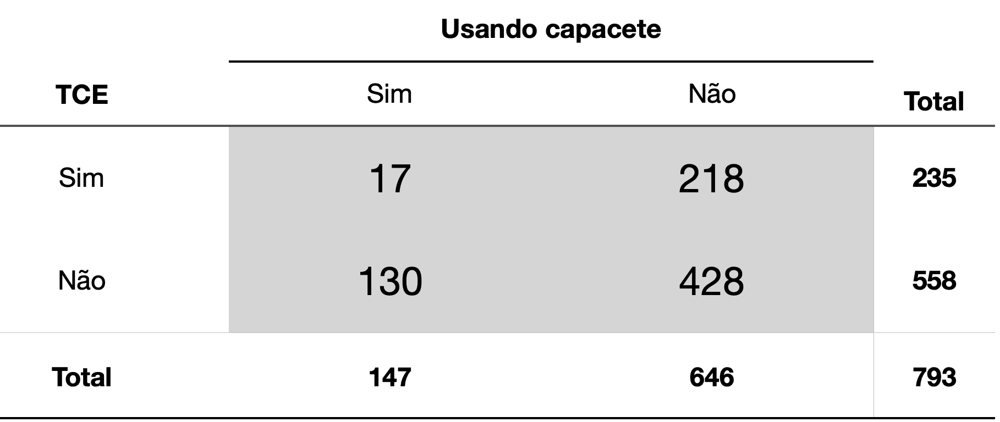

# Definindo a semente para reprodutibilidade
set.seed(1)
# Gerando os dados distribuidos de forma normal
dados <- rnorm(100)
# Gráfico Q-Q plot
qqnorm(dados) # Gráfico Q-Q plot
qqline(dados) # Adiciona a linha de referência
A análise estatística dos dados é uma etapa fundamental em qualquer pesquisa científica. A estatística é uma ferramenta que permite a interpretação dos dados, a identificação de padrões e a tomada de decisões.
Inicialmente vamos apresentar como avaliar a normalidade de um conjunto de dados, etapa fundamental para a escolha da técnica estatística a ser utilizada. Em seguida, vamos apresentar a análise de correlação, que permite avaliar a relação entre duas variáveis. Em seguida, vamos apresentar o teste t de Student, que permite avaliar a diferença entre as médias de dois grupos. Em seguida, vamos apresentar a análise de variância (ANOVA), que permite avaliar a diferença entre as médias de três ou mais grupos. Em seguida, vamos apresentar o teste de Wilcoxon, que permite avaliar a diferença entre as medianas de dois grupos. Em seguida, vamos apresentar o teste do qui-quadrado e o teste exato de Fisher, que permitem avaliar a associação entre duas variáveis categóricas. Por fim, vamos apresentar a análise de regressão, que permite avaliar a relação entre uma variável dependente e uma ou mais variáveis independentes.
A normalidade dos dados é uma das premissas dos testes estatísticos paramétricos. A normalidade dos dados pode ser avaliada visualmente através de gráficos de densidade e de histograma, através de gráficos como o QQ plot (quantile–quantile plot), ou através de testes estatísticos. Neste capítulo vamos apresentar como fazer os gráficos Q-Q plot e como implementar no R os testes de normalidade de Shapiro-Wilk e Kolmogorov-Smirnov.
Um QQ plot, abreviação de “quantile-quantile plot”, é geralmente usado para avaliar se um conjunto de dados segue ou não uma distribuição normal. Um QQ plot é um gráfico de dispersão (scatter plot) criado plotando dois conjuntos de quantis um contra o outro. Os gráficos QQ classificam os dados da amostra em ordem crescente e, em seguida, plotam esses pontos contra quantis calculados a partir de uma distribuição teórica. Embora os gráficos QQ normais sejam os mais usados na prática devido a tantos métodos estatísticos que assumem normalidade, os gráficos QQ podem ser usados para qualquer distribuição. Se ambos os conjuntos de quantis vieram da mesma distribuição, devemos ver os pontos formando uma linha que é aproximadamente reta.
Num gráfico QQ plot normal os pontos fornecem uma indicação da normalidade do conjunto de dados. Se os dados forem normalmente distribuídos, os pontos cairão na linha de diagonal de 45 graus. Por outro lado, quanto mais os pontos se desviam dessa diagonal, menor a probabilidade de o conjunto de dados seguir uma distribuição normal.
O código abaixo mostra como fazer um gráfico Q-Q plot no R. Primeiro, geramos um conjunto de dados que segue uma distribuição normal e, em seguida, fazemos o gráfico QQ plot normal. Observe como os pontos se aproximam da linha de referência.
# Definindo a semente para reprodutibilidade
set.seed(1)
# Gerando os dados distribuidos de forma normal
dados <- rnorm(100)
# Gráfico Q-Q plot
qqnorm(dados) # Gráfico Q-Q plot
qqline(dados) # Adiciona a linha de referência
Vamos criar agora um conjunto de dados que não segue uma distribuição normal e fazer o gráfico Q-Q plot. Veja como os pontos se desviam da linha de referência.
# Definindo a semente para reprodutibilidade
set.seed(1)
# Gerando os dados distribuidos de forma não normal
dados_nao_normais <- rexp(100, rate = 1)
# Gráfico Q-Q plot
qqnorm(dados_nao_normais) # Gráfico Q-Q plot
qqline(dados_nao_normais) # Adiciona a linha de referência
O teste de Shapiro-Wilk é um teste estatístico utilizado para avaliar a normalidade dos dados. A hipótese nula do teste é que os dados seguem uma distribuição normal. Ou sejam, se o valor-p do teste for menor que o nível de significância, a hipótese nula é rejeitada, indicando que os dados não seguem uma distribuição normal. Por outro lado, se o valor-p for maior que o nível de significância, a hipótese nula não é rejeitada, indicando que os dados seguem uma distribuição normal.
O argumento principal do teste de Shapiro-Wilk é o conjunto de dados que queremos testar. O resultado do teste é a estatística \(W\) e o valor-p. \(W\) indica o quão bem os dados se ajustam a uma distribuição normal. O valor \(W\) próximo a 1 indica que os dados provavelmente serão distribuídos normalmente, enquanto um valor significativamente menor que 1 sugere afastamento da normalidade. O valor-p é a probabilidade de obter um valor de W tão extremo quanto o observado, sob a hipótese nula de que os dados seguem uma distribuição normal.
O código abaixo mostra como implementar o teste de Shapiro-Wilk no R. Primeiro, geramos um conjunto de dados que segue uma distribuição normal e, em seguida, fazemos o teste de Shapiro-Wilk. Como já sabemos que nossos dados tem uma distribuição normal, o valor-p desse teste deve ser maior que o nível de significância.
# Definindo a semente para reprodutibilidade
set.seed(1)
# Gerando os dados distribuidos de forma normal
dados <- rnorm(100)
# Teste de Shapiro-Wilk
shapiro.test(dados)
Shapiro-Wilk normality test
data: dados
W = 0.9956, p-value = 0.9876Observe que o valor-p foi realmente maior que o nível de significância, indicando que os dados seguem uma distribuição normal.
Vamos criar agora um conjunto de dados que não segue uma distribuição normal e fazer o teste de Shapiro-Wilk. Observe que o valor-p desse teste deve ser menor que o nível de significância.
# Definindo a semente para reprodutibilidade
set.seed(1)
# Gerando os dados distribuidos de forma não normal
dados_nao_normais <- rexp(100, rate = 1)
# Teste de Shapiro-Wilk
# note que o valor de p do teste de shapiro é mostrado em notação científica
shapiro.test(dados_nao_normais)
Shapiro-Wilk normality test
data: dados_nao_normais
W = 0.82218, p-value = 1.263e-09# extraindo o valor de p do teste de shapiro
pvalue=shapiro.test(dados_nao_normais)$p.value
# Imprimindo o valor de p por extenso
print(paste("p-value =", format(pvalue, scientific = FALSE)))[1] "p-value = 0.000000001262599"Como previsto, o valor-p foi menor que o nível de significância, indicando que os dados não seguem uma distribuição normal.
O teste de Kolmogorov-Smirnov é um outro teste estatístico utilizado para avaliar a normalidade dos dados. Da mesma forma que o teste de Shapiro-Wilki, a hipótese nula do teste de de Kolmogorov-Smirnov é que os dados seguem uma distribuição normal. Ou sejam, se o valor-p do teste for menor que o nível de significância, a hipótese nula é rejeitada, indicando que os dados não seguem uma distribuição normal. Por outro lado, se o valor-p for maior que o nível de significância, a hipótese nula não é rejeitada, indicando que os dados seguem uma distribuição normal.
O teste te Kolmorov-Smirnov também pode ser usado para testar se os dados vem de outras distribuições, pois o teste na verdade verifica se duas distribuições são iguais, ou seja, se uma amostra vem de uma distribuição em particular. Quando desejamos saber se a amostra tem uma distribuiçao normal, o teste de Kolmogorov-Smirnov compara a distribuição empírica dos dados com a distribuição teórica normal.
O argumento principal do teste de Kolmogorov-Smirnov também é o conjunto de dados que queremos testar. Mas também precisamos especificar a distribuição teórica que queremos testar. No nosso caso isso será feito com a string “pnorm”, que indica que queremos testar se os dados seguem uma distribuição normal. Além disso precisamos também especificar os parâmetros da distribuição teórica, que no caso da distribuição normal são a média e o desvio padrão. O mais indicado é usar a média e o desvio padrão dos dados, como fizemos no exemplo abaixo.
O resultado do teste é a estatística \(D\) e o valor-p. \(D\) é a maior diferença entre a função de distribuição acumulada empírica dos dados e a função de distribuição acumulada teórica. O valor-p é a probabilidade de obter um valor de \(D\) tão extremo quanto o observado, sob a hipótese nula de que os dados seguem uma distribuição normal.
O código abaixo mostra como implementar o teste de Kolmogorov-Smirnov no R. Primeiro, geramos um conjunto de dados que segue uma distribuição normal e, em seguida, fazemos o teste de Kolmogorov-Smirnov. Como já sabemos que nossos dados tem uma distribuição normal, o valor-p desse teste deve ser maior que o nível de significância.
# Definindo a semente para reprodutibilidade
set.seed(1)
# Gerando os dados distribuidos de forma normal
dados <- rnorm(100)
# Teste de Kolmogorov-Smirnov
ks.test(dados, "pnorm", mean = mean(dados), sd = sd(dados))
Asymptotic one-sample Kolmogorov-Smirnov test
data: dados
D = 0.047014, p-value = 0.9799
alternative hypothesis: two-sidedObserve que o valor de p foi realmente maior que o nível de significância, indicando que os dados seguem uma distribuição normal.
Vamos criar agora um conjunto de dados que não segue uma distribuição normal e fazer o teste de Kolmogorov-Smirnov. Observe que o valor-p desse teste deve ser menor que o nível de significância.
# Definindo a semente para reprodutibilidade
set.seed(1)
# Gerando os dados distribuidos de forma não normal
dados_nao_normais <- rexp(100, rate = 1)
# Teste de Kolmogorov-Smirnov
ks.test(dados_nao_normais, "pnorm", mean = mean(dados_nao_normais), sd = sd(dados_nao_normais))
Asymptotic one-sample Kolmogorov-Smirnov test
data: dados_nao_normais
D = 0.15964, p-value = 0.01223
alternative hypothesis: two-sidedObserve que o valor-p foi menor que o nível de significância, indicando que os dados não seguem uma distribuição normal.
Frequentemente precisamos calcular numericamente a força e a direção da correlação entre duas variáveis. A medida estatística mais comum para mensurar a força e a direção da correlação entre duas variáveis numéricas é o Coeficiente de Correlação Linear de Pearson - denotado por r. Vale ressaltar que esse coeficiente só serve para analisar correlações lineares.
Pacotes usados nesta seção, carregados uma única vez no início, como recomendado no capítulo sobre pacotes (Capítulo 9):
library(ggplot2)
library(tidyr)
library(GGally)A linguagem R tem uma função específica para calcular o coeficiente de correlação linear de Pearson (r) entre duas variáveis numéricas: a função cor(). Para usar essa função basta inserir como argumentos as duas variáveis numéricas para as quais se deseja calcular o coeficiente. A ordem em que as variáveis são inseridas não faz diferença nesse cálculo.
Vamos testar essas funções no dataset mpg que já foi discutido em capítulos anteriores (Capítulo 9). O código abaixo calcula o coeficiente de correlação linear de Pearson entre as cilindradas (displ) e o número de milhas percorridas com um galão na cidade (cty). A ordem da inserção desses argumentos não importa.
cor(mpg$displ, mpg$cty)[1] -0.798524cor(mpg$cty,mpg$displ)[1] -0.798524O valor encontrado, -0.8, indica que essa é uma correlação negativa e forte. A mensagem é clara, quanto maior as cilindradas, menor a distância percorrida com 1 galão de gasolina, ou seja, carros 1.0 são mais econômicos mesmo.
O valor coeficiente de determinação \(r^2\) pode ser obtido elevando-se a função cor() ao quadrado.
r2 <- cor(mpg$displ, mpg$cty)^2
r2[1] 0.6376405O intervalo de confiança e o valor de p associado ao coeficiente de correlação podem ser obtidos com a função cor.test().
cor.test(mpg$cty,mpg$displ)
Pearson's product-moment correlation
data: mpg$cty and mpg$displ
t = -20.205, df = 232, p-value < 2.2e-16
alternative hypothesis: true correlation is not equal to 0
95 percent confidence interval:
-0.8406782 -0.7467508
sample estimates:
cor
-0.798524 Frequentemente existem valores NA no conjunto de dados. Nesses casos a função cor() não conseguirá computar o valor do coeficiente de correlação, pois, por padrão, essa função só faz os cálculos se todos os pares de dados estiverem completos. Para calcular a correlação omitindo os pares incompletos é necessário ajustar o parâmetro use =, incluindo use = complete.obs.
Para ilustrar essa situação, usaremos o dataset airquality do R, que contém dados NA em algumas de suas medições. Esse dataset contém dados de medições diárias da qualidade do ar em Nova Iorque de maio a setembro de 1973. São cerca de 153 observações e 6 variáveis numéricas: - Ozone (quantidade de ozônio)
- Solar.R (radiação solar)
- Wind (velocidade do vento)
- Temp (temperatura - F)
- Month (mês) - Day (dia)
Podemos verificar a existência de valores NA com o comando summary()
summary(airquality) Ozone Solar.R Wind Temp
Min. : 1.00 Min. : 7.0 Min. : 1.700 Min. :56.00
1st Qu.: 18.00 1st Qu.:115.8 1st Qu.: 7.400 1st Qu.:72.00
Median : 31.50 Median :205.0 Median : 9.700 Median :79.00
Mean : 42.13 Mean :185.9 Mean : 9.958 Mean :77.88
3rd Qu.: 63.25 3rd Qu.:258.8 3rd Qu.:11.500 3rd Qu.:85.00
Max. :168.00 Max. :334.0 Max. :20.700 Max. :97.00
NAs :37 NAs :7
Month Day
Min. :5.000 Min. : 1.0
1st Qu.:6.000 1st Qu.: 8.0
Median :7.000 Median :16.0
Mean :6.993 Mean :15.8
3rd Qu.:8.000 3rd Qu.:23.0
Max. :9.000 Max. :31.0
Devido as valores NA nas variáveis Ozone e Solar.R, a função cor() não calcula o coeficiente de correlação:
cor(airquality$Ozone, airquality$Solar.R)[1] NAPara obter o resultado desejado, precisamos incluir o argumento use = "complete.obs"
cor(airquality$Ozone, airquality$Solar.R, use = "complete.obs")[1] 0.3483417A inclusão desse argumento faz com que a função cor() exclua dos cálculos os valores NA. O mesmo resultado pode ser obtido se excluirmos esses valores antes de usar a função.
Para demonstrar isso, vamos excluir esses valores com a função drop_na()do pacote tidyr, parte do tidyverse. Criaremos um novo data frame com o nome air2.
air2 <- airquality |>
drop_na()
cor(air2$Ozone, air2$Solar.R)[1] 0.3483417A função cor.test() já faz essa exclusão dos dados NA por padrão, não sendo necessária sua exclusão nem o uso do argumento use = "complete.obs".
cor.test(airquality$Ozone, airquality$Solar.R)
Pearson's product-moment correlation
data: airquality$Ozone and airquality$Solar.R
t = 3.8798, df = 109, p-value = 0.0001793
alternative hypothesis: true correlation is not equal to 0
95 percent confidence interval:
0.173194 0.502132
sample estimates:
cor
0.3483417 Podemos usar a função pairs() para visualizar rapidamente todas as correlações entre as variáveis de um dataset. Vamos testar essa função no dataset iris, que faz parte do R base.
Este conjunto de dados fornece as medidas em centímetros das variáveis comprimento e largura da sépala e comprimento e largura da pétala, respectivamente, para 50 flores de cada uma das 3 espécies de íris. As espécies são Iris setosa, versicolor e virginica.
pairs(iris)
O pacote GGally possui uma função similar à função pairs() do R, mas com muito mais funcionalidades. Para usá-la, é necessário instalar o pacote GGally através do comando install.packages("GGally") no console; o pacote já foi carregado no início desta seção.
ggpairs(iris)
Podemos também pedir à função ggpairs() que use cores diferentes para cada espécie.
ggpairs(iris, mapping = aes(color = Species))
Podemos obter o mesmo resultado usando o operador pipe:
iris |>
ggpairs(aes(color = Species))
A forma mais simples de visualizar a correlação entre duas variáveis é através de um gráfico de scatter plot. Essa relação pode ser mostrada de forma ainda mais explícita quando inserimos no gráfico uma reta que representa a correlação linear entre essas variáveis. Essa reta, chamada de reta de regressão linear, representa o modelo matemático de correlação entre essas duas variáveis.
A função básica do R para criar um scatterplot e simplesmente plot() e a inserção da linha de regressão é feita com a função abline() e lm(), de linear model. Vejamos como plotar um gráfico de correlação entre os níveis de ozônio e a radiação solar com esses comandos, usando o dataset airquality do R.
plot(Solar.R ~ Ozone, data = airquality)
abline(lm(Solar.R ~ Ozone, data = airquality))
Apesar dos comandos do R base serem simples, não são nada elegantes. Os gráficos com o ggplot são muito mais profissionais e bem mais flexíveis para ajustes dos detalhes. Vamos plotar esse mesmo gráfico com o ggplot, usando o geom_point() para plotar o scatter plot.
ggplot(airquality) +
geom_point(aes(x=Ozone, y=Solar.R)) Warning: Removed 42 rows containing missing values or values outside the scale range
(`geom_point()`).
O aviso Removed 42 rows containing missing values não é um erro: 42 observações do airquality têm NA em Ozone ou em Solar.R, e o ggplot avisa que as deixou de fora do gráfico. Nos gráficos seguintes esse aviso foi omitido com a opção warning=FALSE do chunk.
Para plotar a reta de regressão basta incluir uma nova camada, uma nova geometria, nesse caso geom_smooth(), indicando como argumentos os mesmos dados e o método linear model lm.
ggplot(airquality) +
geom_point(aes(x=Ozone, y=Solar.R)) +
geom_smooth(aes(x=Ozone, y=Solar.R), method = lm)
Observe entretanto que o código acima repete duas vezes a expressão aes(x=Ozone, y=Solar.R). Podemos reduzir esse código, inserindo essa expressão na primeira linha, o que deixa o código mais limpo, como feito abaixo:
ggplot(airquality, aes(x=Ozone, y=Solar.R)) +
geom_point() +
geom_smooth(method = lm)
O ggplot tem também inúmeras outras possibilidades de ajustes. No código a seguir irei inserir um título, subtítulo, nota de rodapé, mudar os nomes dos eixos e usar um tema pré-definido para estilização do gráfico.
ggplot(airquality, aes(x=Ozone, y=Solar.R)) +
geom_point() +
geom_smooth(method = lm) +
labs(title = "Correlação entre níveis de Ozônio e Radiaçao solar",
subtitle = "Nova Iorque de maio a setembro de 1973",
caption = "fonte: dataset airquality") +
ylab("Radiação Solar") +
xlab("Niveis de Ozônio") +
theme_classic()
O test t de Student foi criado em 1908 por William Sealy Gosset (Student 1908), matemático e estatístico que trabalhava na cervejaria Guinness, em Dublin, na Irlanda. A Guinness considerava de grande importância recrutar os melhores graduados de Oxford e Cambridge para os cargos de bioquímico e estatístico de testes de sua cerveja para monitorar a qualidade da bebida. O teste t, desenvolvido por Gosset, para monitorar a qualidade da cerveja tipo stout tinha como grande diferencial o fato de poder ser aplicado em amostras de pequeno tamanho pequeno, permitindo fazer inferências com um menor número de elementos, reduzindo os custos da pesquisa.
Pacotes usados nesta seção, carregados uma única vez no início, como recomendado no capítulo sobre pacotes (Capítulo 9):
library(tibble)
library(tidyr)
library(ggplot2)A importância dada ao departamento científico da Guinness era tamanha que o uso de métodos estatísticos na fabricação da cerveja era considerado um segredo industrial. Alguns autores argumentam que foi esse o motivo pelo qual Gosset publicou o artigo sobre o teste t em 1908 sob o pseudônimo “Student” e o teste t passou a ser conhecido como teste t de Student.
O teste t de Student (ou simplesmente teste t) compara as médias de dois conjuntos numéricos e avalia se as diferenças entre essas médias são significativas. Quando existem 3 ou mais grupos o teste t não pode ser usado e nesse caso podemos usar o Anova, discutido no capítulo seguinte.
A necessidade de determinar se duas médias de amostras são diferentes entre si é uma situação extremamente frequente em pesquisas científicas. Por exemplo se um grupo experimental difere de um grupo controle, se uma amostra difere da população, se um grupo difere antes de depois de um procedimento. Nessas diversas situações, um método bastante comum é a comparação das médias da medida de interesse. Por exemplo, a média de peso de dois grupos submetidos a diferentes dietas.
Existem 3 tipos comuns de teste t:
- Teste t para duas amostras independentes (ou não pareadas), para comparar as médias de duas amostras independentes.
- Teste t para duas amostras dependentes (ou pareadas), para comparar as médias de duas amostras pareadas.
- Teste t para uma amostra, para comparar a média de uma amostra com a média de uma população.
O Teste t para amostras independentes é o teste padrão, ou default do test t do R.
O R tem uma função muito simples de usar para realizar o teste t: t.test(). Para usar essa função basta incluir como argumentos os valores obtidos de cada grupo da pesquisa e essa função do R já calcula a média de cada grupo e faz a comparação estatística.
Veja o exemplo a seguir, no qual existem dois grupos diferentes de pacientes (controle e experimental), com os valores de uma medida fictícia. Vamos primeiro criar dois conjuntos de dados numéricos, representando os valores individuais de alguma medida de um Ensaio Clínico Randomizado.
# criando os vetores com os dados:
controle <- c(21, 28, 24, 23, 23, 19, 28, 20, 22, 20, 26, 26)
experimental <- c(26, 27, 23, 25, 25, 29, 30, 31, 36, 23, 32, 22)
# criando uma tibble para armazenar os vetores.
result <- tibble(controle, experimental)
result# A tibble: 12 × 2
controle experimental
<dbl> <dbl>
1 21 26
2 28 27
3 24 23
4 23 25
5 23 25
6 19 29
7 28 30
8 20 31
9 22 36
10 20 23
11 26 32
12 26 22Muitas vezes antes de algumas análises, teremos de fazer uma transformação em nosso data frame (ou tibble), transformando o data frame do tipo wide em long como explicado na seção sobre o pacote tidyr (Seção 11.1).
# criando um data frame do tipo long
result.long <- pivot_longer(data = result,
cols = c("controle", "experimental"),
names_to = "grupo",
values_to = "scores")
result.long# A tibble: 24 × 2
grupo scores
<chr> <dbl>
1 controle 21
2 experimental 26
3 controle 28
4 experimental 27
5 controle 24
6 experimental 23
7 controle 23
8 experimental 25
9 controle 23
10 experimental 25
# ℹ 14 more rowsUm gráfico de boxplot pode nos mostrar que o grupo experimental tem uma média maior.
ggplot(result.long) +
geom_boxplot(aes(x=grupo, y=scores, fill=grupo)) +
theme_classic()
Mas um gráfico não é suficiente.
Para comparar a média de cada um desses dois grupos, usamos a função t.test() como mostrado a seguir. Podemos fazer o test t de várias formas.
$.1. Teste t com vetores numéricos
# Teste t de Student para amostras independentes, padrão do R
# usando os vetores com os dados como argumentos.
t.test(controle, experimental)
Welch Two Sample t-test
data: controle and experimental
t = -2.6837, df = 20.163, p-value = 0.01421
alternative hypothesis: true difference in means is not equal to 0
95 percent confidence interval:
-7.2555305 -0.9111362
sample estimates:
mean of x mean of y
23.33333 27.41667 2. Teste t com data frame wide
Se o data frame com os dados está no formaro wide (tidy format), ou seja, se há uma coluna para cada amostra, para realizar o test t, basta usar o operador $ para acessar as variáveis do data frame a serem comparadas.
t.test(result$controle, result$experimental)
Welch Two Sample t-test
data: result$controle and result$experimental
t = -2.6837, df = 20.163, p-value = 0.01421
alternative hypothesis: true difference in means is not equal to 0
95 percent confidence interval:
-7.2555305 -0.9111362
sample estimates:
mean of x mean of y
23.33333 27.41667 A função t.test() não tem o argumento data (ao contrário de lm(), que veremos adiante). Para não repetir o nome do data frame a cada variável, podemos usar a função with(), que avalia a expressão dentro do data frame informado.
with(result, t.test(controle, experimental))
Welch Two Sample t-test
data: controle and experimental
t = -2.6837, df = 20.163, p-value = 0.01421
alternative hypothesis: true difference in means is not equal to 0
95 percent confidence interval:
-7.2555305 -0.9111362
sample estimates:
mean of x mean of y
23.33333 27.41667 3. Teste t com data frame long
Se os dados das duas amostras estão numa mesma coluna (long format), e se há uma outra coluna para identificar os grupos, o argumento para o teste t é um pouco diferente. Nesse caso, precisamos usar o operador ~ para informar ao teste que desejamos usar os dados de uma coluna (ex: scores), estratificados em dois grupos segundo os dados de uma outra coluna (ex. grupos)
# teste t com data frame do tipo long
# explicação: os dados numéricos estão na coluna "scores", a informação sobre os grupos está na variável "grupo".
t.test(scores~grupo, data=result.long)
Welch Two Sample t-test
data: scores by grupo
t = -2.6837, df = 20.163, p-value = 0.01421
alternative hypothesis: true difference in means between group controle and group experimental is not equal to 0
95 percent confidence interval:
-7.2555305 -0.9111362
sample estimates:
mean in group controle mean in group experimental
23.33333 27.41667 Se as amostras são dependentes, ou pareadas, precisamos incluir essa informação nos argumentos no teste. Vamos usar o mesmo data frame criado anteriormente, supondo que as medidas numéricas fossem de uma mesma amostra em dois momentos do tempo. Nesse caso o teste t deve ser um test pareado. Basta inserir o argumento paired = TRUE.
t.test(controle, experimental, paired = TRUE)
Paired t-test
data: controle and experimental
t = -2.6353, df = 11, p-value = 0.02319
alternative hypothesis: true mean difference is not equal to 0
95 percent confidence interval:
-7.493713 -0.672954
sample estimates:
mean difference
-4.083333 t.test(result$controle, result$experimental, paired = TRUE)
Paired t-test
data: result$controle and result$experimental
t = -2.6353, df = 11, p-value = 0.02319
alternative hypothesis: true mean difference is not equal to 0
95 percent confidence interval:
-7.493713 -0.672954
sample estimates:
mean difference
-4.083333 Entretanto, quando usamos a sintaxe do teste com o operador ~ não podemos inserir o argumento paired = TRUE, senão teremos um erro. Isso é proposital: desde a versão 4.4 do R a fórmula não aceita mais o teste pareado, porque ela não garante que as observações dos dois grupos estejam na mesma ordem. Para o teste pareado, use a sintaxe com os dois vetores, como acima.
No caso de uma amostras, para comparar a média de uma amostra com uma média já conhecida, basta inserir nos argumentos do teste t a amostras e o valor da média a ser comparada, como mostrado abaixo.
Para esse exemplo, vamos usar o dataset wide, chamado result, criado acima, e usar o conjunto de dados chamdo experimental como se fosse nossa única amostra. E vamos inserir um valor arbitrário da média a ser comparada (mu = 30).
t.test(result$experimental, mu= 30)
One Sample t-test
data: result$experimental
t = -2.1044, df = 11, p-value = 0.05915
alternative hypothesis: true mean is not equal to 30
95 percent confidence interval:
24.71479 30.11854
sample estimates:
mean of x
27.41667 Ou, com a função with(), informando o data frame primeiro e depois o nome da coluna/variável.
with(result, t.test(experimental, mu = 30))
One Sample t-test
data: experimental
t = -2.1044, df = 11, p-value = 0.05915
alternative hypothesis: true mean is not equal to 30
95 percent confidence interval:
24.71479 30.11854
sample estimates:
mean of x
27.41667 O output dos testes estatísticos no R é uma lista com diversos resultados, que podem ser acessados com o operador $, tal como elementos de um data frame. Podemos verificar a estrutura dessa lista com o comando str(). Mas para isso é preciso armazenar o resultado do test num objeto. Chamaremos aqui esse objeto de test.results.
# armazemando os resultados do test num objeto chamado test.results
test.results <- t.test(scores~grupo, data=result.long)# verificando o objeto test.results com str
str(test.results)List of 10
$ statistic : Named num -2.68
..- attr(*, "names")= chr "t"
$ parameter : Named num 20.2
..- attr(*, "names")= chr "df"
$ p.value : num 0.0142
$ conf.int : num [1:2] -7.256 -0.911
..- attr(*, "conf.level")= num 0.95
$ estimate : Named num [1:2] 23.3 27.4
..- attr(*, "names")= chr [1:2] "mean in group controle" "mean in group experimental"
$ null.value : Named num 0
..- attr(*, "names")= chr "difference in means between group controle and group experimental"
$ stderr : num 1.52
$ alternative: chr "two.sided"
$ method : chr "Welch Two Sample t-test"
$ data.name : chr "scores by grupo"
- attr(*, "class")= chr "htest"podemos extrair o valor de p, ou qualquer outro valor usando o operador $.
p_value <- test.results$p.value
p_value[1] 0.01421353Veja que cada informação do teste está armazenada numa variável que podemos agora acessar. Isso é útil para escrevermos relatórios dinâmicos. Veja a seguinte frase abaixo:
A diferença entre as médias foi estatisticamente significativa (p=0.0142135).
Nessa frase eu não digitei o valor de p, mas inseri a variável p_value. Isso é o que torna os relatórios dinâmicos, pois se houver alguma mudança nos dados, basta rodar novamente o código e o valor de p no texto vai ser automaticamente corrigido.
Essa foi a frase que eu digitei:
A diferença entre as médias foi estatisticamente significativa (p=
`r p_value`).
O backtick (backquote ou acento grave) informa o início e o fim de um código, a letra r logo no início informa que o código a seguir é um código da linguagem R e p_value vai ser então interpretado como a variável p_value e seu valor é que será mostrado no texto.
Atente-se para o detalhe de que as médias estão numa mesma variável estimate:
test.results$estimate mean in group controle mean in group experimental
23.33333 27.41667 Para acessar cada um desses valores individualmente é necessário indicar isso explicitamente usando o operador [].
test.results$estimate[1]mean in group controle
23.33333 Veja que da forma como fizemos acima o resultado foi a média do grupo controle, mas o texto veio junto. Para extrair apenas o valor numérico devemos incluir mais um elemento no código, a função as.numeric().
as.numeric(test.results$estimate[1])[1] 23.33333O teste Anova (Análise de Variância) foi criado pelo estatístico britânico Ronald Fisher no início do século XX, para comparar as médias de três ou mais grupos independentes, para determinar se há diferenças estatisticamente significativas entre eles.
Pacotes usados nesta seção, carregados uma única vez no início, como recomendado no capítulo sobre pacotes (Capítulo 9):
library(dplyr)
library(ggplot2)A ideia central do teste Anova é decompor a variabilidade total dos dados em duas partes: a variabilidade entre os grupos e a variabilidade dentro dos grupos. Se as médias dos grupos forem estatisticamente diferentes, espera-se que a variabilidade entre os grupos seja maior do que a variabilidade dentro dos grupos.
Para exemplificarmos o uso do teste ANOVA vamo usar o dataset PlantGrowth do R. Esse dataset contém o peso das plantas cultivadas sob duas condições de tratamento diferentes e um grupo controle. São, portanto, 3 grupos diferentes de tratamento. Para ter mais informações sobre esse dataset basta digitar ?PlantGrowth no console.
# armazenando o dataset num objeto chamado mydata.
mydata <- PlantGrowth# verificando o dataset
head(mydata) weight group
1 4.17 ctrl
2 5.58 ctrl
3 5.18 ctrl
4 6.11 ctrl
5 4.50 ctrl
6 4.61 ctrl# verificando o dataset
str(mydata)'data.frame': 30 obs. of 2 variables:
$ weight: num 4.17 5.58 5.18 6.11 4.5 4.61 5.17 4.53 5.33 5.14 ...
$ group : Factor w/ 3 levels "ctrl","trt1",..: 1 1 1 1 1 1 1 1 1 1 ...Observe que esse dataset já está no formato long, conforme explicado no capítulo sobre data frames (Capítulo 6).
Podemos inicialmente computar as estatísticas básicas com a função summarise() do pacote dplyr, conforme explicado na seção sobre esse pacote (Seção 11.2).
group_by(mydata, group) |>
summarise(count = n(),
mean = mean(weight, na.rm = TRUE),
sd = sd(weight, na.rm = TRUE))# A tibble: 3 × 4
group count mean sd
<fct> <int> <dbl> <dbl>
1 ctrl 10 5.03 0.583
2 trt1 10 4.66 0.794
3 trt2 10 5.53 0.443Podemos também visualizar esses conjuntos com um boxplot, conforme explicado no capítulo sobre ggplot (Capítulo 12).
ggplot(mydata, aes(x=group, y=weight, fill=group)) +
geom_boxplot() +
ylab("peso") +
xlab("grupo") +
theme_classic()
Finalmente, para realizar o teste ANOVA usamos a função aov(). A função summary() será usada em seguida para resumir os dados do modelo de variância. Vamos ver como isso é feito.
Inicialmente precisamos colocar o modelo ANOVA num objeto e indicar nos argumentos da função anova que o peso das plantas será uma função do tratamento. Lembre-se que o peso está na variável weight e o tipo de tratamento na variável group.
modelo_ANOVA <- aov(weight ~ group, data = mydata)Depois de armazenar o modelo ANOVA na variável que denominamos modelo_ANOVA, podemos então usar a função summary(). Essa função tem como argumento justamente o objeto criado anteriormente para armazenar o modelo ANOVA.
summary(modelo_ANOVA) Df Sum Sq Mean Sq F value Pr(>F)
group 2 3.766 1.8832 4.846 0.0159 *
Residuals 27 10.492 0.3886
---
Signif. codes: 0 '***' 0.001 '**' 0.01 '*' 0.05 '.' 0.1 ' ' 1A coluna Pr(>F) indica o valor de p do teste ANOVA. Como o valor foi menor que 0.05 podemos interpretar que algumas das média dos grupo são estatisticamente diferentes, mas não sabemos que pares são estatisticamente diferentes.
Como o teste ANOVA é significativo, podemos calcular Tukey HSD (Tukey Honest Significant Differences, para realizar comparações múltiplas de pares entre as médias dos grupos.
A função TukeyHSD() usa o modelo ANOVA que já criamos como argumento.
TukeyHSD(modelo_ANOVA) Tukey multiple comparisons of means
95% family-wise confidence level
Fit: aov(formula = weight ~ group, data = mydata)
$group
diff lwr upr p adj
trt1-ctrl -0.371 -1.0622161 0.3202161 0.3908711
trt2-ctrl 0.494 -0.1972161 1.1852161 0.1979960
trt2-trt1 0.865 0.1737839 1.5562161 0.0120064Explicando o resultado:
diff: mostra a diferença entre as médias dos dois grupos.
lwr: o ponto final inferior do intervalo de confiança em 95% (padrão).
upr: o ponto final superior do intervalo de confiança em 95% (padrão).
p adj: p-valor após ajuste para as comparações múltiplas.
Pode ser visto no resultado acima que apenas a diferença entre trt2 e trt1 é significativa com um valor p ajustado de 0,012.
Nem sempre os dados numéricos seguem um padrão normal. Nesses casos a comparação das médias não pode ser feita com o teste t. Existem vários testes para uso nesses casos, chamados de testes não paramétricos. Os testes Wilcoxon rank sum test (Mann-Whitney test) é o equivalentes não paramétricos do teste t.
Pacotes usados nesta seção, carregados uma única vez no início, como recomendado no capítulo sobre pacotes (Capítulo 9):
library(tibble)
library(tidyr)O padrão no R é que esses testes sejam realizados para amostras não pareadas. Caso as amostras sejam pareadas será necessário incluir o argumento paired = TRUE.
Veja como realizar os Wilcoxon rank sum test no R, para amostras independentes, tomando como exemplo os mesmos dados usados no test t realizado anteriormente.
# criando os vetores com os dados:
controle <- c(21, 28, 24, 23, 23, 19, 28, 20, 22, 20, 26, 26)
experimental <- c(26, 27, 23, 25, 25, 29, 30, 31, 36, 23, 32, 22)
result <- tibble(controle, experimental)
result.long <- pivot_longer(data = result,
cols = c("controle", "experimental"),
names_to = "grupo",
values_to = "scores")Fazendo o teste de Wilcoxon rank sum test quando os dados estão em colunas distintas, ou seja, um data frame no formato wide:
wilcox.test(result$controle, result$experimental)
Wilcoxon rank sum exact test
data: result$controle and result$experimental
W = 32.5, p-value = 0.02086
alternative hypothesis: true location shift is not equal to 0Fazendo o Wilcoxon rank sum test quando os dados estão em uma única coluna, ou seja, um data frame no formato long. Nesse caso, assim como fizemos no teste t, indicamos a variável numérica e a variável dos grupos separadas pelo operador ~.
wilcox.test(data=result.long, scores~grupo)
Wilcoxon rank sum exact test
data: scores by grupo
W = 32.5, p-value = 0.02086
alternative hypothesis: true location shift is not equal to 0Na mensagem de aviso acima o termo “ties” significa que há valores repetidos na amostra. Se você tiver dois valores idênticos em seus dados, eles são chamados de “empates” ou ties”. Nesse caso, os ranks não são mais únicos e, portanto, os valores de p não podem ser calculados com exatidão.
O teste do chi-quadrado compara as frequências observadas em tabelas de contingência com as frequências esperadas se a hipótese nula fosse verdadeira.
O argumento para a realização desse teste no R é, portanto, uma tabela de contingência.
Vamos usar os dados de uma pesquisa sobre a efetividade dos capacetes de bicicleta na prevenção de trauma crânio-encefálico (TCE), tal como exemplificado por Pagano e Gauvreau (Pagano et al. 2022). O objetivo aqui é avaliar, num estudo de caso controle, se o uso de capacetes reduz o risco de Trauma Crânio Encefálico.

O testo do chi-quadrado pode ser usado para avaliar se o uso do capacete reduziu o nº de casos de TCE entre os ciclistas. Precisamos apenas construir uma tabela com esses dados no R, o que pode ser feito através da função matrix(), ou com as funções data.frame() ou tibble(). Veremos como fazer das duas formas.
Usando a função matrix():
tab1 <- matrix(c(17,218,130,428),
nrow=2,
byrow = TRUE)
tab1 [,1] [,2]
[1,] 17 218
[2,] 130 428O argumento nrow=2 indica que a tabela terá 2 linhas e o argumento byrow = TRUE indica que as células da tabela serão preenchidas linha a linha.
Usando a função data.frame() ou tibble()
De forma simples, sem legendas. Observe que a função data.frame() cria colunas com cada vetor. Assim a primeira coluna conterá os valores 17 e 130, e a segunda coluna os valores 218 e 428.
dat1 <- data.frame(c(17,130), c(218,428))
dat1 c.17..130. c.218..428.
1 17 218
2 130 428Podemos melhorar o data frame dicionando legendas:
dat2 <- data.frame(comCapacete = c(17,130),
semCapacete = c(218,428),
row.names = c("comTCE", "semTCE"))
dat2 comCapacete semCapacete
comTCE 17 218
semTCE 130 428Vamos agora fazer os testes usando essas tabelas criadas, para verificarmos que o resultado é o mesmo.
chisq.test(tab1)
Pearson's Chi-squared test with Yates' continuity correction
data: tab1
X-squared = 27.202, df = 1, p-value = 1.833e-07chisq.test(dat1)
Pearson's Chi-squared test with Yates' continuity correction
data: dat1
X-squared = 27.202, df = 1, p-value = 1.833e-07chisq.test(dat2)
Pearson's Chi-squared test with Yates' continuity correction
data: dat2
X-squared = 27.202, df = 1, p-value = 1.833e-07Observe que em todos os casos o resultado foi idêntico. Observe também que o teste fez a correção de Yates automaticamente. É possível alterar esse comportamento padrão com o argumento correct = FALSE.
chisq.test(dat2, correct = FALSE)
Pearson's Chi-squared test
data: dat2
X-squared = 28.255, df = 1, p-value = 1.063e-07Para aplicar o teste do chi quadrado em dados armazenados em data frames precisamos, da mesma forma, primeiro tabular os dados para depois fazer o teste.
Como exemplo vamos usar o dataset “Arthritis” disponível no pacote vcd (visualizing categorical data). Esse dataset contém informações de 84 pacientes, 41 dos quais usaram um medicamento e 43 usaram um placebo. O uso do medicamento ou placebo está registrado numa variável categórica (Treatment) de dois níveis (treated, placebo). O resultado está registrado em uma variável categórica ordinal (Improved) de 3 níveis (None < Some < Marked).
Para instalar o pacote vcd use o comando install.packages no console.
install.packages(“vcd”)
Como só precisamos do dataset, e não das funções do pacote, podemos carregá-lo direto com data(), indicando o pacote de origem no argumento package:
data("Arthritis", package = "vcd")Verificando o dataset Arthritis com o comando str().
str(Arthritis)'data.frame': 84 obs. of 5 variables:
$ ID : int 57 46 77 17 36 23 75 39 33 55 ...
$ Treatment: Factor w/ 2 levels "Placebo","Treated": 2 2 2 2 2 2 2 2 2 2 ...
$ Sex : Factor w/ 2 levels "Female","Male": 2 2 2 2 2 2 2 2 2 2 ...
$ Age : int 27 29 30 32 46 58 59 59 63 63 ...
$ Improved : Ord.factor w/ 3 levels "None"<"Some"<..: 2 1 1 3 3 3 1 3 1 1 ...A primeira etapa para verificar a associação entre o tratamento e a melhora é criar uma tabela com as variáveis (categóricas) de interesse: Treatment e Improved.
tab5 <- table(Arthritis$Treatment, Arthritis$Improved)
tab5
None Some Marked
Placebo 29 7 7
Treated 13 7 21Agora que já construímos a tabela a partir das duas variáveis de interesse do data frame, podemos então usar o teste do chi quadrado para verificar a associação entre o tratamento e o resultado. Basta aplicar o teste na tabela criada.
chisq.test(tab5)
Pearson's Chi-squared test
data: tab5
X-squared = 13.055, df = 2, p-value = 0.001463O resultado indica haver uma associação entre o tipo de tratamento realizado e o resultado, ou seja, o uso do medicamento parece ter sido melhor que o placebo.
Podemos também inserir as variáveis de interesse diretamente na função chisq.test(), tal como no exemplo abaixo:
chisq.test(Arthritis$Treatment, Arthritis$Improved)
Pearson's Chi-squared test
data: Arthritis$Treatment and Arthritis$Improved
X-squared = 13.055, df = 2, p-value = 0.001463Podemos da mesma forma extrair os resultados do teste armazenando os resultado do teste num objeto.
result_chi <- chisq.test(tab5)
str(result_chi)List of 9
$ statistic: Named num 13.1
..- attr(*, "names")= chr "X-squared"
$ parameter: Named int 2
..- attr(*, "names")= chr "df"
$ p.value : num 0.00146
$ method : chr "Pearson's Chi-squared test"
$ data.name: chr "tab5"
$ observed : 'table' int [1:2, 1:3] 29 13 7 7 7 21
..- attr(*, "dimnames")=List of 2
.. ..$ : chr [1:2] "Placebo" "Treated"
.. ..$ : chr [1:3] "None" "Some" "Marked"
$ expected : num [1:2, 1:3] 21.5 20.5 7.17 6.83 14.33 ...
..- attr(*, "dimnames")=List of 2
.. ..$ : chr [1:2] "Placebo" "Treated"
.. ..$ : chr [1:3] "None" "Some" "Marked"
$ residuals: 'table' num [1:2, 1:3] 1.6175 -1.6565 -0.0623 0.0638 -1.937 ...
..- attr(*, "dimnames")=List of 2
.. ..$ : chr [1:2] "Placebo" "Treated"
.. ..$ : chr [1:3] "None" "Some" "Marked"
$ stdres : 'table' num [1:2, 1:3] 3.2742 -3.2742 -0.0976 0.0976 -3.3956 ...
..- attr(*, "dimnames")=List of 2
.. ..$ : chr [1:2] "Placebo" "Treated"
.. ..$ : chr [1:3] "None" "Some" "Marked"
- attr(*, "class")= chr "htest"O valor de p pode ser extraido com o comando result_chi$p.value, como feito abaixo:
result_chi$p.value[1] 0.001462643O teste exato de Fisher é utilizado na análise de tabelas de contingência quando a amostra é pequena, embora seja válido para todo tamanho de amostra. Foi desenvolvido por Ronald Fisher. Fisher disse ter concebido o teste depois de um comentário da Dra. Muriel Bristol, que afirmou ser capaz de detectar se o chá ou o leite foi adicionado primeiro em sua xícara. Ele testou seu pedido no experimento “dama apreciadora de chá”, contado em diversos livros de história da estatística, inclusive num livro com esse mesmo título: “The Lady Tasting Tea” de David Salsburg (Salsburg 2001).
Fisher projetou um experimento em que a senhora recebia 8 xícaras de chá, 4 com leite primeiro, 4 com chá primeiro, em ordem aleatória. Ela então provou cada xícara e relatou quais quatro ela achava que tinham leite adicionado primeiro. Ela acertou todas as 8 chícaras.
A pergunta que Fisher fez foi: “como testamos se ela realmente é habilidosa nisso ou se está apenas adivinhando?”
Vamos construir uma tabela de contingência, com os valores VERDADEIROS nas colunas e as resultados nas linhas.
tea_tasting <- data.frame(Leite_Primeiro = c(4,0),
Cha_Primeiro = c(0,4),
row.names = c("Respondeu que era Leite Primeiro", "Respondeu que era Chá Primeiro"))
tea_tasting Leite_Primeiro Cha_Primeiro
Respondeu que era Leite Primeiro 4 0
Respondeu que era Chá Primeiro 0 4Para usar o teste de Fisher no R basta inserirmos a tabela de contingência como argumento da função fisher.test().
Entretanto, há mais um detalhe a ser analisado. Um dos parâmetros do teste é se ele é bicaudal ou unicaldal. O padrão é que o R realize um teste bicaudal (two.sided). Entretanto, Fisher testou se a senhora Muriel era melhor do que o acaso e não se sua habilidade era diferente do acaso e, portanto, ele usou um teste unilateral.
Para encontrarmos o mesmo resultado, precisamos ajustar esse argumento, inserindo alternative = "greater".
fisher.test(tea_tasting, alternative = "greater")
Fisher's Exact Test for Count Data
data: tea_tasting
p-value = 0.01429
alternative hypothesis: true odds ratio is greater than 1
95 percent confidence interval:
2.003768 Inf
sample estimates:
odds ratio
Inf É possível fazer o teste de Fisher diretamente com os dados de um data frame, bastando tabular os dados com table() e passar a tabela para fisher.test(). Vamos usar novamente o data frame Arthritis, do pacote vcd.
fisher.test(tab5)
Fisher's Exact Test for Count Data
data: tab5
p-value = 0.001393
alternative hypothesis: two.sidedA análise de regressão é uma ferramenta estatística fundamental para investigar e modelar a relação entre variáveis. Ela é amplamente utilizada em várias áreas do conhecimento, incluindo as ciências da saúde, para entender como uma ou mais variáveis independentes (ou preditoras) influenciam uma variável dependente (ou resposta). Em sua essência, a regressão busca encontrar uma função que descreva, de forma aproximada, a relação entre essas variáveis, permitindo previsões e interpretações relevantes.
Pacotes usados nesta seção, carregados uma única vez no início, como recomendado no capítulo sobre pacotes (Capítulo 9):
library(ggplot2)
library(gridExtra)
library(grid)
library(dplyr)
library(kableExtra)
library(broom)
library(stargazer)Para tornar mais clara a importância da análise de regressão, imagine uma situação prática: um estudo de saúde pública onde queremos entender o impacto de diferentes fatores no risco de desenvolvimento de doenças cardíacas. Ao investigar variáveis como nível de atividade física, consumo de gordura na dieta e histórico familiar, a análise de regressão pode ajudar a quantificar o impacto de cada um desses fatores, fornecendo insights que são essenciais para orientar recomendações de saúde e intervenções preventivas.
A abordagem de regressão linear, um dos tipos mais comuns, parte do pressuposto de que a relação entre as variáveis é linear, ou seja, que mudanças em uma variável preditora resultarão em mudanças proporcionais na variável dependente. Ao ajustar um modelo linear, podemos quantificar o impacto de cada variável preditora, identificar padrões e avaliar a força da associação entre variáveis. Isso é particularmente útil quando queremos entender como diferentes fatores contribuem para um resultado específico, ajudando a embasar decisões clínicas ou políticas de saúde.
A análise de correlação está intimamente relacionada à análise de regressão e, muitas vezes, é um ponto de partida para ela. A correlação mede a força e a direção da associação linear entre duas variáveis, fornecendo um valor entre -1 e 1 que indica o grau de relacionamento. Quando observamos uma correlação forte entre duas variáveis, isso pode sugerir que uma análise de regressão seja adequada para explorar mais profundamente essa relação e modelar como uma variável pode prever a outra. Por exemplo, se há uma alta correlação entre o consumo de sal e a pressão arterial, isso sugere que a regressão pode ser utilizada para quantificar o impacto do consumo de sal na pressão arterial, ao mesmo tempo em que se controla outros fatores, como idade e nível de atividade física. No entanto, é importante lembrar que a correlação não implica causalidade; ela apenas indica que as variáveis tendem a variar juntas. A análise de regressão, por sua vez, vai além da correlação ao quantificar a magnitude do efeito de uma ou mais variáveis preditoras sobre a variável dependente, controlando outras variáveis envolvidas no processo.
Para ilustrar, imagine que estamos estudando o efeito do consumo de álcool e do tabagismo nos níveis de uma enzima hepática chamada GGT, um marcador usado em exames de saúde. Podemos usar a análise de regressão para verificar como o consumo semanal de bebidas alcoólicas (variável preditora 1) e o número de cigarros fumados por dia (variável preditora 2) estão relacionados com os níveis de GGT (variável dependente). Um modelo de regressão linear múltipla permitiria quantificar o impacto de cada fator, ao mesmo tempo controlando os efeitos do outro, ajudando a determinar qual desses hábitos é mais prejudicial ao fígado. Além disso, esse tipo de análise pode ajudar a prever riscos futuros, como o desenvolvimento de doenças hepáticas, com base nos padrões de consumo de álcool e tabaco.
Outro exemplo relevante envolve a predição do peso de recém-nascidos a partir de variáveis maternas como idade, ganho de peso durante a gestação e níveis de estresse. Utilizando a análise de regressão, é possível não apenas prever o peso do bebê, mas também identificar quais fatores têm maior impacto no desenvolvimento fetal, permitindo intervenções específicas para reduzir riscos e promover a saúde materno-infantil. Por exemplo, se a análise mostrar que o ganho de peso durante a gestação tem um impacto significativo no peso do recém-nascido, isso pode levar a recomendações mais específicas para gestantes, ajudando a garantir melhores resultados de saúde tanto para a mãe quanto para o bebê.
A análise de regressão também pode ser aplicada em contextos epidemiológicos, como no estudo da relação entre fatores socioeconômicos e a incidência de doenças crônicas. Por exemplo, ao investigar como renda, nível de escolaridade e acesso a serviços de saúde influenciam a prevalência de hipertensão, a regressão permite identificar quais desses fatores têm maior contribuição para o desenvolvimento da condição. Esses insights são essenciais para o planejamento de políticas públicas de saúde que visem reduzir desigualdades e melhorar a qualidade de vida da população.
A utilidade da regressão vai além da simples previsão: ela oferece insights sobre as relações entre variáveis e permite o controle estatístico de variáveis de confusão, o que é particularmente importante em estudos observacionais nas áreas da saúde e medicina. Compreender os fundamentos da análise de regressão ajuda a fortalecer a interpretação de dados, a tomada de decisões baseada em evidências e o planejamento de intervenções eficazes. Além disso, ao incluir múltiplas variáveis em um modelo, podemos isolar o efeito específico de cada uma delas, o que é crucial para evitar interpretações equivocadas causadas por fatores de confusão.
Além da regressão linear, existem também modelos de regressão múltipla não linear, que permitem capturar relações mais complexas entre as variáveis. Esses modelos são úteis quando a relação entre as variáveis não pode ser bem representada por uma linha reta, como em situações onde os efeitos são exponenciais ou curvilíneos. Por exemplo, o crescimento de certos tipos de tumores pode ser mais bem modelado por uma regressão não linear, que consegue capturar padrões de crescimento acelerado ou desacelerado. Assim, enquanto a regressão linear é uma ferramenta poderosa para muitas situações, a regressão não linear expande as possibilidades de modelagem para relações mais complexas.
Um outro tipo de regressão, denominada de regressão logística (ou regressão logit ou modelo logit), é utilizada quando a variável de resposta é categórica, mais especificamente, binária (dicotômica). Por exemplo, para prever o óbito (sim ou não), um diagnóstico (diabético ou não diabético), ou se um tumor é maligno ou benigno, a partir de uma ou mais variáveis preditoras..
Existem vários tipos de regressão regressão, tais como regressão de Poisson, regressão Probit, regressão ordinal, regressão quantílica, regressão Elastic Net, regressão polinomial, regressão Splines, regressão de Cox, regressão Stepwise, regressão hierárquica, regressão de mínimos quadrados parciais (PLS), regressão log-log, regressão suavizada (Loess/Lowess) e regressão Bayesiana. Entretanto, esses tipos estão fora do escopo desse texto.
O diagrama abaixo mostra os tipos de regressão mais simples e usuais
graph TD
A[Tipos de Regressão] --> B[Desfecho Numérico]
A --> C[Desfecho Categórico]
B --> D[Regressão Linear]
B --> E[Regressão Não Linear]
D --> F[Univariada]
D --> G[Multivariada]
E --> H[Univariada]
E --> I[Multivariada]
C --> J[Regressão Logística]
J --> K[Binária]
J --> L[Multinomial]
Embora a análise de regressão seja uma ferramenta poderosa, é importante também entender suas limitações. Por exemplo, a regressão linear assume que a relação entre as variáveis é sempre linear, o que pode não ser verdadeiro em todos os casos. Além disso, ela é sensível a outliers, que podem distorcer os resultados e levar a conclusões equivocadas. Essas limitações devem ser consideradas ao interpretar os resultados e planejar estudos futuros.
Por fim, a análise de regressão também facilita a comunicação de resultados complexos de forma acessível. Ao utilizar modelos de regressão, é possível traduzir dados estatísticos em informações práticas, que podem ser facilmente compreendidas por profissionais de saúde, gestores e até mesmo pacientes. Isso faz da regressão uma ferramenta poderosa não apenas para análise e pesquisa, mas também para a implementação de práticas e políticas de saúde baseadas em evidências sólidas. A clareza e a objetividade proporcionadas pelos modelos de regressão tornam possível transformar dados em ações, ajudando a promover melhores resultados de saúde e bem-estar para a população.
A ideia de correlação entre duas variáveis numéricas surgiu pela primeira vez no século XIX com os trabalhos de Francis Galton sobre hereditariedade. Motivado pelas teorias evolucionárias de Darwin, Galton acreditava que a hereditariedade desempenhava um papel crucial na formação das habilidades e traços humanos. Para testar suas hipóteses, Galton coletou extensos dados sobre características físicas, como a altura, em famílias. Em um de seus estudos mais famosos, Galton analisou a relação entre as alturas dos pais e dos filhos, desenvolvendo métodos estatísticos inovadores para a época. Ele criou pela primeira vez um gráfico de dispersão (scatter plot) representando os pares de medidas de altura em um plano cartesiano, permitindo visualizar a associação entre as duas variáveis e medir numericamente o grau de relacionamento entre elas.
Dando continuidade ao trabalho de Galton, foi Karl Pearson quem desenvolveu a formulação matemática precisa para medir a força e a direção dessa relação. Além disso, Pearson estabeleceu a equação da reta que melhor se ajusta aos pontos, chamada de reta de regressão, permitindo a previsão dos valores de uma variável com base em outra. A equação é expressa como \(y = ax + b\), onde \(b\) é o intercepto e \(a\) é a inclinação da reta, ou coeficiente de regressão, representando a variação esperada na altura dos filhos para cada unidade de variação na altura dos pais.

A correlação entre duas variáveis numéricas analisa se há alguma associação entre elas, bem como a força e a direção dessa associação, mas não descreve relações de causalidade. É um ditado comum na ciência dizer que correlação não implica causalidade. A análise de regressão vai além, pois o interesse não está apenas na intensidade ou direção da correlação, mas também na natureza dessa relação. Na análise de regressão, o pesquisador estabelece quais são as variáveis independentes (preditoras) e qual é a variável dependente (de desfecho). O objetivo é construir um modelo matemático que possa prever o desfecho a partir das variáveis preditoras. Na regressão linear, o modelo criado é simplesmente uma reta. O modelo gerado pela regressão linear é a equação da reta que mais se ajusta aos dados (best fit line), ou seja, o modelo calcula os parâmetros da inclinação (\(a\)) e intercepto (\(b\)) da reta \(y = ax + b\).
O objetivo da análise de regressão é encontrar os coeficientes (\(a\) e \(b\)) dessa reta. Com isso poderemos saber o valor da variável de desfecho, dado um valor qualquer da variável preditora.
Podemos inserir nesse modelo mais de uma variável preditora, transformando uma regressão univariada em uma regressão multivariada, e nesse caso nossa equação teria mais de um parâmetro de inclinação: \(\color{blue}{y = a_1x_1 + a_2x_2 + a_3x_3 + a_4x_4 + b}\). Aqui, cada variável preditora (\(\color{blue} {x_1, x_2, x_3, x_4}\)) tem seu próprio coeficiente (\(\color{blue}{a_1, a_2, a_3, a_4}\)). A regressão multivariada envolve descobrir os melhores valores desses coeficientes.
A análise de regressão linear é usada quando a variável de resposta é numérica, ou seja, quando pretendemos criar um modelo matemático para prever um valor numérico a partir de uma ou mais variáveis. Por exemplo, podemos criar um modelo linear para prever o quanto a glicemia aumenta de acordo com a quantidade calórica ingerida, ou podemos criar modelos lineares complexos, com mais de uma variável preditora, tal como para analisar o quanto a pressão arterial depende do peso, do sexo e da idade.
Para que o modelo de regressão linear seja válido e forneça resultados confiáveis, é importante que alguns pressupostos sejam atendidos.
Linearidade: A relação entre a variável dependente (resposta) e as variáveis independentes (preditoras) deve ser linear. Isso significa que as mudanças na variável dependente são proporcionais às mudanças nas variáveis preditoras.
Independência dos Erros: Os erros (ou resíduos) devem ser independentes entre si. Isso significa que o erro de uma observação não deve estar relacionado ao erro de outra observação, evitando a presença de autocorrelação.
Homocedasticidade dos Erros: A variância dos erros deve ser constante para todos os valores das variáveis independentes. A variância dos resíduos deve ser uniforme ao longo da linha de regressão, o que significa que os resíduos não devem se tornar mais dispersos ou menos dispersos à medida que os valores das variáveis preditoras mudam.
Normalidade dos Erros: Os erros devem seguir uma distribuição normal com média zero. Esse pressuposto é importante para garantir a validade dos testes estatísticos (como o teste t) e dos intervalos de confiança.
Ausência de Multicolinearidade: No caso da regressão múltipla, as variáveis preditoras não devem estar altamente correlacionadas entre si. A multicolinearidade pode dificultar a interpretação dos efeitos individuais de cada variável e tornar os coeficientes do modelo instáveis.
Exatidão no Modelo: Não devem existir variáveis relevantes ausentes no modelo, e as variáveis incluídas devem ser apropriadas para o problema em estudo. A ausência de variáveis importantes pode resultar em uma especificação incorreta do modelo.
Linearidade nos Parâmetros: O modelo deve ser linear nos parâmetros, ou seja, os coeficientes devem ser estimados como combinações lineares das variáveis preditoras.
Verificar a satisfação desses pressupostos é fundamental para garantir que o modelo de regressão linear seja apropriado e que suas previsões e inferências sejam válidas. Caso algum desses pressupostos seja violado, ajustes no modelo ou transformações nos dados podem ser necessários.
Os resíduos em um modelo de regressão linear representam a diferença entre os valores observados e os valores preditos pela reta de regressão. Em outras palavras, cada ponto de dados tem um valor real (observado) e um valor estimado pela equação da reta. A diferença entre esses dois valores é o que chamamos de resíduo. Os resíduos indicam o quão bem o modelo está se ajustando aos dados: quanto menores forem os resíduos, melhor será o ajuste do modelo.
Matematicamente, o resíduo é dado por:
\[ e_i = y_i - \hat{y}_i \]
Onde \(e_i\) é o resíduo, \(y_i\)é o valor observado e \(\hat{y}_i\) é o valor predito pelo modelo. O objetivo da regressão linear é minimizar esses resíduos, de forma que a reta de regressão seja a melhor possível em termos de ajuste aos dados.
No gráfico, os resíduos são representados por linhas verticais que ligam cada ponto da amostra à reta de regressão. Essas linhas mostram visualmente o erro de predição para cada ponto.

Observe no gráfico acima as linhas vermelhas verticais entre os pontos dos dados reais e a reta de regressão. Essas distâncias representam os erros do modelo. A fórmula para computar esses cada um desses erros é \(e_i = y_i - \hat{y}_i\).
O que o algoritmo da função lm() faz é tentar reduzir a soma desses erros através de uma técnica conhecida como Método dos Quadrados Mínimos.
O método dos quadrados mínimos é uma técnica matemática usada para determinar a melhor linha de ajuste para um conjunto de dados. Foi inicialmente desenvolvido por Adrien-Marie Legendre. Legendre desenvolveu essa técnica para resolver problemas relacionados à determinação das órbitas de cometas, buscando um meio de ajustar as observações astronômicas às previsões teóricas com a maior precisão possível. O método dos mínimos quadrados tornou-se rapidamente uma ferramenta essencial para cientistas que lidavam com dados experimentais sujeitos a erros. A técnica permite encontrar os parâmetros de um modelo que melhor se ajustam aos dados, garantindo que a soma dos quadrados dos resíduos (as diferenças entre os valores observados e os estimados - RSS, do inglês Residual Sum of Squares) seja a menor possível. No final do século XIX, Karl Pearson aplicou o método dos mínimos quadrados ao estudo das relações entre variáveis biológicas, especialmente na análise da hereditariedade de características físicas como a altura. Pearson conseguiu estimar a reta que melhor se ajustava aos dados observacionais, permitindo não apenas descrever a relação entre as alturas de pais e filhos, mas também prever a altura esperada de um filho com base na altura dos pais.
\[ RSS = \sum_{i=1}^n (y_i - \hat{y}_i)^2 \]
Como os resíduos podem ser positivos ou negativos, elevá-los ao quadrado evita que valores positivos e negativos se anulem. O objetivo do método dos quadrados mínimos é encontrar os coeficientes da reta de regressão (inclinação e intercepto) que minimizem o valor do RSS, ou seja, a soma dos quadrados dos erros.
Isso significa que, ao usar o método dos quadrados mínimos, o modelo está tentando encontrar a reta que passe “o mais próximo possível” dos pontos de dados, de maneira a minimizar o erro de predição. É essa técnica que permite calcular os coeficientes da reta da forma mais precisa possível.
Veja no exemplo abaixo a equação de uma reta que melhor se ajusta aos pontos do gráfico. O que o algoritmo da regressão linear fez foi encontrar os parâmetros \(a\) e \(b\) que minimizam a RSS para criar a equação da reta.No gráfico acima, podemos observar os pontos de dados reais, a reta de regressão ajustada e as linhas vermelhas verticais que representam os resíduos. O método dos quadrados mínimos ajusta essa reta de modo que a soma dos quadrados das distâncias entre os pontos e a reta (os resíduos) seja a menor possível.
Veja na tabela abaixo, na última linha, que a soma dos erros é zero, mas o RSS é um número positivo.
| x | y | y_pred | erro | erro2 |
|---|---|---|---|---|
| -4 | 33.4 | 7.37 | 26.03 | 677.71 |
| 21 | 74.7 | 69.44 | 5.26 | 27.72 |
| -10 | -48.6 | -7.53 | -41.07 | 1686.80 |
| 63 | 122.6 | 173.71 | -51.11 | 2612.27 |
| 25 | 108.7 | 79.37 | 29.33 | 860.46 |
| -10 | -31.3 | -7.53 | -23.77 | 565.04 |
| 30 | 89.5 | 91.78 | -2.28 | 5.20 |
| 37 | 139.3 | 109.16 | 30.14 | 908.46 |
| 32 | 120.6 | 96.75 | 23.85 | 569.03 |
| 6 | 35.8 | 32.19 | 3.61 | 13.00 |
| NA | 0.00 | 7925.70 |
Veja nos gráficos abaixo como o valor do RSS vai se reduzindo à medida que a reta vai se adequando melhor aos dados. O menor valor de RSS encontrado foi \(7925.70\).

Vamos agora praticar a análise de regresão linear univariada (uma variável) no R passo a passo. Lembre-se que o objetivo da regressão linear é encontrar os coeficientes da equação que servirá de modelo para podermos fazer predições. No caso da regressão linear univariada, na qual temos apenas uma variável preditora, nosso modelo será uma reta \(y=ax+b\). O objetivo da regressão será então encontrar os melhores valores dos parâmetros \(a\) e \(b\).
O primeiro passo é ter um dataframe com os valores de x e y, ou seja, com os dados que temos das variáveis de interesse. Vamos usar dados fictícios de número de drinks por semana (drinks) e consumo de tabaco (tobacco) como variável preditoras e níveis séricos de GGT como variável de desfecho (y=ggt). Para fins de uma análise univariada vamos utilizar apenas a variável drinks como preditora.
# dados fictícios
drinks <- c( 5, 6, 7,10,11,12,14,18,19,20,22,23,25,28,30) # drinks por semana
tobacco <- c( 3, 7,10,15,14,16,20,22,22,25,27,26,26,29,30) # cigarros por dia
ggt <- c(13,14,12,23,20,29,30,39,36,48,40,45,48,65,75)
# Criando o dataframe com os dados
df <- data.frame(drinks, ggt, tobacco)
O segundo passo é criar um objeto para armazenar o modelo (podemos usar um nome que indique isso, ex. modelo, fit, etc), depois atribuir (<-) o modelo linear a esse objeto usando a função lm().
Os argumentos da função lm() são a variável preditora x e a variável de desfecho y. Para criar a relação entre as variáveis iremos usar também o operador ~ (til), já descrito anteriormente. Esse operador irá servir para indicar a relação entre variável de desfecho e preditora e é usado na seguinte sequência:
O código vai ficar assim:
model <- lm(ggt~drinks, data=df)
Com isso, a função lm() irá encontrar os melhores valores para os parâmetros \(a\) e \(b\) da reta de regressão.
# Usando a função lm() para criar o modelo de regressão linear e armazendo esse modelo no objeto chamado model
model <- lm(ggt~drinks, data=df)Veja como implementar isso tudo de uma vez no código abaixo:
# dados fictícios
drinks <- c( 5, 6, 7,10,11,12,14,18,19,20,22,23,25,28,30) # drinks por semana
tobacco <- c( 3, 7,10,15,14,16,20,22,22,25,27,26,26,29,30) # cigarros por dia
ggt <- c(13,14,12,23,20,29,30,39,36,48,40,45,48,65,75)
# Criando o dataframe com os dados
df <- data.frame(drinks, ggt, tobacco)
# Usando a função lm() para criar o modelo de regressão linear e armazendo esse modelo no objeto chamado model
model1 <- lm(ggt~drinks, data=df)
model2 <- lm(ggt~tobacco, data=df)
# Extraindo os coeficientes do modelo gerado para GGT e alcool
# (a = inclinação, b = intercepto, como na equação y = ax + b)
a1 <- coef(model1)[2]
b1 <- coef(model1)[1]
# Extraindo os coeficientes do modelo gerado para GGT e cigarro
a2 <- coef(model2)[2]
b2 <- coef(model2)[1]
Os dados completos de cada modelo linear podem ser obtidos com a função summary().
summary(model1)
Call:
lm(formula = ggt ~ drinks, data = df)
Residuals:
Min 1Q Median 3Q Max
-7.6917 -4.0432 0.2271 3.4092 9.4707
Coefficients:
Estimate Std. Error t value Pr(>|t|)
(Intercept) -1.3617 3.0411 -0.448 0.662
drinks 2.2297 0.1653 13.490 5.07e-09 ***
---
Signif. codes: 0 '***' 0.001 '**' 0.01 '*' 0.05 '.' 0.1 ' ' 1
Residual standard error: 4.99 on 13 degrees of freedom
Multiple R-squared: 0.9333, Adjusted R-squared: 0.9282
F-statistic: 182 on 1 and 13 DF, p-value: 5.072e-09Os resultados da análise de regressão indicam uma forte relação positiva entre o número de drinks consumidos por semana e os níveis séricos de GGT. No resultado do modelo, isso é representado pelo coeficiente associado à variável drinks, que é 2.2297 (veja em “Coefficients” na linha de drinks sob “Estimate”). Isso significa que, em média, para cada drink adicional consumido por semana, os níveis de GGT aumentam em aproximadamente 2,23 unidades.
A significância estatística dessa relação é confirmada pelo valor de p muito pequeno, 5.07e-09, encontrado na coluna “Pr(>|t|)” na mesma linha de drinks. Este valor é menor que 0,001 e é destacado com três asteriscos ***, indicando uma significância estatística muito alta.
O R-quadrado ajustado (Adjusted R-squared), localizado abaixo dos coeficientes, é de 92,82%. Isso indica que o modelo explica aproximadamente 92,8% da variação nos níveis séricos de GGT, demonstrando que o número de drinks por semana é um forte preditor desses níveis.
Em resumo, os dados apresentados no modelo de regressão mostram claramente que, conforme aumenta o consumo semanal de drinks, há um aumento significativo nos níveis séricos de GGT. Essa relação é estatisticamente significativa e está evidenciada nos coeficientes e nos indicadores de ajuste do modelo fornecidos no resultado.
Frequentemente uma única variável preditora não será capaz de explicar toda variação da variável de desfecho. Na verdade, na medicina é raro que uma resposta dependa de apenas uma única variável. Com o R podemos facilmente inserir mais de uma variável preditora em nosso modelo de regressão linear.
Com duas variáveis nossa reta de regressão se transforma num plano, e nosso modelo que antes era uma simples equação da reta se transforma numa equação de um plano. Assim como a regressão linear simples define uma linha no plano (x,y), o modelo de regressão linear múltipla com duas variáveis \(Y = a_1x_1 + a_2x_2 + b\) é a equação de um plano no espaço \(x_1, x_2, Y\). Neste modelo, \(a_1\) representa a inclinação do plano em relação ao eixo \(x_1\) e \(a_2\) representa a inclinação do plano em relação ao eixo \(x_2\).
Com mais de 2 variáveis preditoras não há mais uma visualização possível, mas isso não impede que sejam usadas quantas variáveis forem necessárias. O formato básico do modelo é bastante simples, tal como no modelo simples, usando o operador ~ para separar a variável de desfecho das preditoras e usando o operador + para somar as variáveis preditoras.
Vamos continuar analisando os níveis de GGT, mas agora incorporando ao nosso modelo tanto o consumo de álcool como de cigarros.

model3 <- lm(ggt ~ drinks + tobacco , data = df)ms3 <- summary(model3)
ms3
Call:
lm(formula = ggt ~ drinks + tobacco, data = df)
Residuals:
Min 1Q Median 3Q Max
-7.4220 -3.9217 0.8547 3.1281 7.8527
Coefficients:
Estimate Std. Error t value Pr(>|t|)
(Intercept) 0.3945 3.5191 0.112 0.912601
drinks 2.8249 0.6216 4.544 0.000673 ***
tobacco -0.5998 0.6039 -0.993 0.340202
---
Signif. codes: 0 '***' 0.001 '**' 0.01 '*' 0.05 '.' 0.1 ' ' 1
Residual standard error: 4.992 on 12 degrees of freedom
Multiple R-squared: 0.9384, Adjusted R-squared: 0.9281
F-statistic: 91.39 on 2 and 12 DF, p-value: 5.467e-08Os resultados da análise de regressão múltipla, que agora incluem tanto o número de drinks consumidos por semana quanto o consumo de tabaco como preditores dos níveis séricos de GGT, oferecem uma compreensão mais detalhada dos fatores que influenciam esses níveis. Observamos que o coeficiente associado à variável drinks é 2,8249, indicando que, mantendo constante o consumo de tabaco, cada drink adicional por semana está associado a um aumento médio de aproximadamente 2,82 unidades nos níveis de GGT. Este resultado é altamente significativo estatisticamente, com um valor de p de 0,000673, destacado pelos três asteriscos ***.
Por outro lado, o coeficiente para tobacco é -0,5998, sugerindo que, mantendo constante o consumo de drinks, cada unidade adicional de consumo de tabaco está associada a uma redução média de 0,60 unidades nos níveis de GGT. No entanto, o valor de p para tobacco é 0,340202, indicando que este resultado não é estatisticamente significativo.
A falta de significância estatística para a variável tobacco no modelo múltiplo, apesar de poder ser significativa quando analisada isoladamente, é provavelmente causada pela multicolinearidade — uma situação em que tobacco e drinks estão correlacionados entre si. Isso significa que ambos os preditores compartilham informações semelhantes sobre a variação nos níveis de GGT. Veja no gráfico abaixo como há uma forte correlação linear entre o consumo de alcool e cigarro nesse dataset.
cor_tobacco_alcool <- cor(df$drinks, df$tobacco)
ggplot(df, aes(x = drinks, y = tobacco)) +
geom_point() +
geom_smooth(formula = y ~ x, method = "lm", se = TRUE, color = "blue") +
labs(title= "Correlação entre Cigarro e Álcool",
subtitle = "O coeficiente de correlação foi muito alto") +
annotate("text",
x = 5,
y = 25,
label = paste0("r = ", round(cor_tobacco_alcool, 3)),
hjust = 0,
vjust = 1,
size = 8) +
theme_classic()
Quando drinks é incluído no modelo, tobacco pode não adicionar valor preditivo único significativo, resultando em um p-valor mais alto para tobacco. Além disso, a multicolinearidade aumenta os erros padrão dos coeficientes de regressão, afetando os valores de p. Embora tobacco possa mostrar uma relação forte com GGT de forma isolada, essa relação é reduzida no contexto do modelo múltiplo devido à sobreposição com drinks.
O modelo como um todo apresenta um R-quadrado ajustado de 92,81%, indicando que aproximadamente 92,8% da variação nos níveis séricos de GGT podem ser explicados pelo consumo de drinks e tabaco. No entanto, este alto valor deve-se principalmente ao impacto significativo do consumo de drinks. A estatística F é 91,39 com um valor de p de 5,467e-08, reforçando que o modelo é estatisticamente significativo no geral.
Em resumo, ao incorporar o consumo de tabaco no modelo, constatamos que o consumo de álcool permanece como o fator mais significativo associado aos níveis séricos de GGT. A influência do tabaco não é estatisticamente significativa no modelo múltiplo, possivelmente devido à sua correlação com o consumo de álcool. Para lidar com a multicolinearidade, poderia-se examinar o Fator de Inflação de Variância (VIF) ou considerar modelos alternativos que tratem da variância compartilhada entre tobacco e drinks. Dessa forma, para entender e prever os níveis de GGT, o foco deve ser mantido no consumo de bebidas alcoólicas, já que é o preditor mais forte e significativo no modelo.
Como vimos acima, as informações de um modelo estatístico criado com a função lm() podem ser acessadas criando um objeto com a função summary(). Entretanto, essas informações não estão organizadas num data frame e é difícil manipular e comparar resultados de diversos modelos. É também muito difícil combinar resultados de diversos modelos. O pacote broom resume as principais informações sobre estatísticas de objetos em data frames organizados facilitando sua análise, comparação e visualização.
Este pacote fornece três métodos que organizam as informações de um modelo estatístico.
tidy(): constrói um quadro de dados que resume as estatísticas do modelo. Isso inclui coeficientes e valores p para cada termo em uma regressão, informações por cluster em aplicativos de armazenamento em cluster ou informações por teste para funções de teste múltiplo.
glance(): constrói um resumo conciso de uma linha do modelo. Isso normalmente contém valores como \(r^2\), \(r^2\) ajustado e erro padrão residual que são computados uma vez para o modelo inteiro.
augment(): adiciona colunas aos dados originais que foram modelados. Isso inclui previsões, resíduos e atribuições de cluster.
Como veremos adiante, A função tidy() também pode ser aplicada a objetos htest, como aqueles produzidos por funções internas populares como t.test(), cor.test() e wilcox.test().
tidy(model3)# A tibble: 3 × 5
term estimate std.error statistic p.value
<chr> <dbl> <dbl> <dbl> <dbl>
1 (Intercept) 0.394 3.52 0.112 0.913
2 drinks 2.82 0.622 4.54 0.000673
3 tobacco -0.600 0.604 -0.993 0.340 Note que os dados estatísticos do modelo agora são variáveis (colunas)
A função glance() computa as estatísticas do modelo, tais como \(r^2\), \(\sigma\), p-values, AIC e BIC.
glance(model3)# A tibble: 1 × 12
r.squared adj.r.squared sigma statistic p.value df logLik AIC BIC
<dbl> <dbl> <dbl> <dbl> <dbl> <dbl> <dbl> <dbl> <dbl>
1 0.938 0.928 4.99 91.4 0.0000000547 2 -43.7 95.5 98.3
# ℹ 3 more variables: deviance <dbl>, df.residual <int>, nobs <int>Com a função augment(), adicionamos colunas aos dados originais que foram modelados. Isso inclui previsões, resíduos e atribuições de cluster.
augment(model3)# A tibble: 15 × 9
ggt drinks tobacco .fitted .resid .hat .sigma .cooksd .std.resid
<dbl> <dbl> <dbl> <dbl> <dbl> <dbl> <dbl> <dbl> <dbl>
1 13 5 3 12.7 0.281 0.566 5.21 0.00316 0.0853
2 14 6 7 13.1 0.855 0.243 5.21 0.00415 0.197
3 12 7 10 14.2 -2.17 0.169 5.16 0.0155 -0.477
4 23 10 15 19.6 3.35 0.183 5.09 0.0412 0.743
5 20 11 14 23.1 -3.07 0.102 5.12 0.0160 -0.649
6 29 12 16 24.7 4.30 0.110 5.03 0.0346 0.914
7 30 14 20 27.9 2.05 0.222 5.17 0.0207 0.466
8 39 18 22 38.0 0.953 0.0900 5.21 0.00132 0.200
9 36 19 22 40.9 -4.87 0.0733 4.99 0.0271 -1.01
10 48 20 25 41.9 6.10 0.151 4.82 0.105 1.33
11 40 22 27 46.3 -6.35 0.171 4.77 0.134 -1.40
12 45 23 26 49.8 -4.77 0.112 4.99 0.0431 -1.01
13 48 25 26 55.4 -7.42 0.187 4.59 0.208 -1.65
14 65 28 29 62.1 2.90 0.251 5.12 0.0503 0.672
15 75 30 30 67.1 7.85 0.368 4.28 0.761 1.98 stargazer(model3, type = "text")
===============================================
Dependent variable:
---------------------------
ggt
-----------------------------------------------
drinks 2.825***
(0.622)
tobacco -0.600
(0.604)
Constant 0.394
(3.519)
-----------------------------------------------
Observations 15
R2 0.938
Adjusted R2 0.928
Residual Std. Error 4.992 (df = 12)
F Statistic 91.392*** (df = 2; 12)
===============================================
Note: *p<0.1; **p<0.05; ***p<0.01A regressão logística é um algoritmo usado para resolver problemas de classificação, ou seja, quando o resultado a ser previsto é categórico. Ela serve para prever a probabilidade de um evento pertencer a uma determinada categoria. Por exemplo, suponha que temos um conjunto de dados de pacientes com tumores e queremos prever se um tumor é maligno (canceroso) ou benigno (não canceroso). A regressão logística nos ajuda a fazer essa classificação. Ela é amplamente utilizada em várias áreas, como medicina, finanças e marketing, para fazer previsões e tomar decisões com base em probabilidades. O algoritmo da regressão logística se baseia em um modelo matemático que relaciona as variáveis de entrada (como tamanho do tumor, idade do paciente, etc.) com a variável de saída (se o tumor é maligno ou benigno).
Pacotes usados nesta seção, carregados uma única vez no início, como recomendado no capítulo sobre pacotes (Capítulo 9):
library(ggplot2)
library(pROC)
library(kableExtra)Assim como a regressão linear, a regressão logística parte de uma equação na qual cada variável (\(x_i\)) tem um coeficiente (\(a_i\)), de tal forma que:
\[ z = a_0 + a_1x_1 + a_2x_2 + a_3x_3 + a_4x_4 + \dots + a_nx_n \]
A ideia da regressão logística é transformar essa soma em uma probabilidade, ou seja, em um valor entre 0 e 1.
A transformação desse valor de \(z\) em uma probabilidade é obtida com o uso da função sigmoide, que calcula uma probabilidade a partir da combinação linear das variáveis de entrada. Essa função tem a forma de uma curva em “S”, como mostrado no gráfico abaixo, e é definida por:
\[ p=f(z) = \frac{1}{1 + e^{-z}} \]

A função sigmoide recebe um valor \(z\) como entrada e retorna um valor entre 0 e 1. Ela é definida pela fórmula \(f(z) = \frac{1}{1 + e^{-z}}\) , onde \(e\) é a constante matemática de Euler, com valor aproximado de 2,718. O valor \(z\) representa a combinação linear das variáveis de entrada do modelo de regressão logística. A função sigmoide transforma esse valor \(z\) em uma probabilidade, que representa a chance de um evento ocorrer.
Quando o valor de \(z\) é muito grande e positivo, o termo \(e^{-z}\) se torna um número muito pequeno, fazendo com que o denominador da fórmula seja próximo de 1. Isso faz com que a função sigmoide retorne um valor próximo de 1. Por outro lado, quando o valor de \(z\) é muito negativo, o termo \(e^{-z}\) se torna um número muito grande, fazendo com que o denominador seja um número muito grande. Isso resulta em um valor próximo de 0 para a função sigmoide.
Em resumo, a função sigmoide mapeia qualquer valor de entrada para um valor entre 0 e 1. Para fazer a classificação, o valor obtido pela função sigmoide é comparado a um limiar (threshold ou decision boundary), que usualmente é 0.5. Se a probabilidade for maior que o limiar, classificamos como 1. Caso contrário, classificamos como 0. Assim, o algoritmo de regressão logística faz uma classificação entre duas possibilidades.
Além disso, os coeficientes \(a_i\) podem ser interpretados em termos das odds do evento. A relação entre \(z\) e a probabilidade \(p\) pode ser expressa como:
\[ z= \ln\left(\frac{p}{1 - p}\right) \]
Onde \(\frac{p}{1 - p}\) representa as odds do evento ocorrer. Essa forma logarítmica lineariza a relação, permitindo que os coeficientes sejam estimados usando métodos estatísticos apropriados, como a máxima verossimilhança.
Vamos explorar a regressão logística usando o dataset SAheart do pacote bestglm. Esse dados foram coletados como parte de um estudo para entender os fatores de risco associados à doença cardíaca coronariana (CHD - Coronary Heart Disease) em uma população sul-africana, para identificar os fatores que podem contribuir para a incidência de doenças coronarianas (Rossouw et al. 1983). É um conjunto de dados frequentemente utilizado para ilustrar análises estatísticas e técnicas de aprendizado de máquina, especialmente no contexto de predição de doenças cardíacas.
O dataset SAheart contém 462 observações e 10 variáveis:
sbp: Pressão arterial sistólica (em mmHg)
tobacco: Consumo cumulativo de tabaco (em kg)
ldl: Nível de lipoproteína de baixa densidade (mg/dl)
adiposity: Adiposidade
famhist: Histórico familiar de doença coronariana (presente/ausente)
typea: Pontuação no teste de comportamento tipo A (escala psicológica que mede traços de personalidade)
obesity: Índice de Massa Corporal (imc)
alcohol: Consumo de álcool (em gramas por dia)
age: Idade do paciente (em anos)
chd: Doença coronariana (0 = ausente, 1 = presente) - variável de resposta ou desfecho
bestglm deve ser instalado e carregado para acessar o dataset SAheart.pROC para gerar e visualizar a curva ROC.# Carregando o dataset
data(SAheart, package = "bestglm")
# Visualizando as primeiras linhas do dataset
head(SAheart) |> kbl(caption = "Primeiras linhas do Dataset SAheart antes da normalização",
booktabs = TRUE,
row.names = FALSE,
digits=2) |>
kable_classic(full_width = F, html_font = "Cambria") |>
row_spec(row = 1:6, color = "black", background = "white", font_size = 10) |>
row_spec(row = 0, color = "white", background = "#FF5733", font_size = 15)| sbp | tobacco | ldl | adiposity | famhist | typea | obesity | alcohol | age | chd |
|---|---|---|---|---|---|---|---|---|---|
| 160 | 12.00 | 5.73 | 23.11 | Present | 49 | 25.30 | 97.20 | 52 | 1 |
| 144 | 0.01 | 4.41 | 28.61 | Absent | 55 | 28.87 | 2.06 | 63 | 1 |
| 118 | 0.08 | 3.48 | 32.28 | Present | 52 | 29.14 | 3.81 | 46 | 0 |
| 170 | 7.50 | 6.41 | 38.03 | Present | 51 | 31.99 | 24.26 | 58 | 1 |
| 134 | 13.60 | 3.50 | 27.78 | Present | 60 | 25.99 | 57.34 | 49 | 1 |
| 132 | 6.20 | 6.47 | 36.21 | Present | 62 | 30.77 | 14.14 | 45 | 0 |
Na regressão logística, a normalização dos dados é um passo crucial no pré-processamento que garante que todas as variáveis do conjunto de dados contribuam de maneira equilibrada para o modelo. A função sigmoide utilizada na regressão logística é sensível às escalas das variáveis de entrada; variáveis com valores numéricos maiores podem ter um impacto desproporcional no processo de otimização, influenciando a convergência e o ajuste dos coeficientes.
Por exemplo, no nosso conjunto de dados, os valores de LDL dos pacientes variam de 0 a 15, enquanto o consumo de álcool varia de 0 a 147 gramas por dia. Se essas variáveis forem usadas diretamente no modelo sem normalização, o consumo de álcool, por ter uma escala numérica significativamente maior, pode dominar o processo de ajuste, ofuscando o efeito da LDL e de outras variáveis com escalas menores.
A normalização ajusta os valores para uma escala comum—geralmente entre 0 e 1 ou com média zero e desvio padrão um—permitindo que todas as variáveis tenham um impacto equilibrado no modelo. Isso melhora a eficiência do algoritmo de otimização e ajuda a garantir que o modelo capture de forma adequada as relações entre as variáveis independentes e a variável dependente.
Em contraste, na regressão linear, a normalização dos dados geralmente não é necessária. Isso ocorre porque os coeficientes estimados na regressão linear se ajustam proporcionalmente às escalas das variáveis, e a interpretação dos coeficientes permanece direta: cada coeficiente representa a variação esperada na variável dependente para uma unidade de variação na variável independente correspondente. Normalizar as variáveis na regressão linear pode até dificultar a interpretação prática dos coeficientes, já que as unidades originais das variáveis são perdidas.
Existem várias formas de fazer a normalização dos dados, vamos usar aqui a técnica de normalização Z-score às variáveis numéricas.
# Criando uma função para normalizar os dados
normalize <- function(x) {
return ((x - mean(x)) / sd(x))
}
# Identificando as variáveis numéricas
numericvars <- c("sbp", "tobacco", "ldl", "adiposity", "typea", "obesity", "alcohol", "age")
# Normalizando as variáveis numéricas em todo o dataset
SAheart[numericvars] <- lapply(SAheart[numericvars], normalize)| sbp | tobacco | ldl | adiposity | famhist | typea | obesity | alcohol | age | chd |
|---|---|---|---|---|---|---|---|---|---|
| 1.06 | 1.82 | 0.48 | -0.30 | Present | -0.42 | -0.18 | 3.27 | 0.63 | 1 |
| 0.28 | -0.79 | -0.16 | 0.41 | Absent | 0.19 | 0.67 | -0.61 | 1.38 | 1 |
| -0.99 | -0.77 | -0.61 | 0.88 | Present | -0.11 | 0.73 | -0.54 | 0.22 | 0 |
| 1.55 | 0.84 | 0.81 | 1.62 | Present | -0.21 | 1.41 | 0.29 | 1.04 | 1 |
| -0.21 | 2.17 | -0.60 | 0.31 | Present | 0.70 | -0.01 | 1.65 | 0.42 | 1 |
| -0.31 | 0.56 | 0.84 | 1.39 | Present | 0.91 | 1.12 | -0.12 | 0.15 | 0 |
Além disso, um outro passo geralmente é necessário. É preciso que as variáveis categóricas estejam explicitamente classificadas no dataframe como factor. Caso as variáveis categóricas não estejam definidas como factor é necessário realizar essa transformação utilizando a função as.factor() como mostrado no código abaixo. No caso do dataset SAheart isso não é necessário porque a variável categórica famhist já está definida como factor. Coloquei o código abaixo apenas como exemplo de como podemos fazer isso.
SAheart$famhist <- as.factor(SAheart$famhist)Um elemento fundamdental para um modelo de regressão logística bem-sucedido é selecionar as variáveis adequadas para inclusão no modelo. Embora seja tentador incluir o máximo possível de variáveis de entrada, isso pode enfraquecer associações verdadeiras e resultar em grandes erros padrão com intervalos de confiança amplos e imprecisos, ou, inversamente, identificar associações espúrias. É essencial levar em conta a plausibilidade científica e a relevância clínica da associação. Por exemplo, análises univariadas de fatores de risco para infarto do miocárdio podem mostrar que cabelos grisalhos e calvície estão associados à ocorrência da doença. No entanto, essas associações são cientificamente implausíveis e, portanto, não devem ser incluídas em uma análise de regressão logística. A associação entre cabelos grisalhos e calvície provavelmente é apenas resultado desses fatores serem encontrados em indivíduos mais velhos e é a idade o fator que interessa e não a calvície ou cabelos grisalhos. Uma outra técnica para escolher as variáveis de interesse envolve examinar a relação entre o resultado e cada preditor individualmente e, em seguida, usar apenas as variáveis que atendem a um critério predefinido de significância para executar um modelo multivariável.
Um outro ponto importante é evitar usar variáveis altamente correlacionadas. Plotar gráficos de dispersão entre todas variáveis entre si pode ajudar a visualizar essas correlações.
plot(SAheart)
Como pode ser vito no gráfico acima, as variáveis adiposidade e obesidade parecem estar correlacionadas, o que pode ser mensurado com o código abaixo:
cor.test(SAheart$adiposity, SAheart$obesity)
Pearson's product-moment correlation
data: SAheart$adiposity and SAheart$obesity
t = 22.033, df = 460, p-value < 2.2e-16
alternative hypothesis: true correlation is not equal to 0
95 percent confidence interval:
0.6690645 0.7582198
sample estimates:
cor
0.7165563 Mesmo sem esses dados, seria plausível imaginar que o nível de obesidade e de adiposidade tem uma correlação forte, sendo adequado inserir apenas uma dessas duas variáveis no modelo.
Uma etapa importante é dividir os dados em conjuntos de treino e teste. Isso é necessário para podermos avaliar a performance do modelo em dados não usados no treinamento. O conjunto de treino é usado para ajustar o modelo, enquanto o conjunto de teste é usado para avaliar a capacidade de generalização do modelo.
# Dividindo os dados em treino (70%) e teste (30%)
set.seed(123)
# criando indices aleatórios para as 70% das linhas do dataset
train_indices <- sample(1:nrow(SAheart), size = 0.7 * nrow(SAheart))
# explicação:
# 1:nrow(SAheart): Gera uma sequência de números de 1 até o número de linhas do dataset SAheart. Isso representa todos os índices das observações no dataset.
# size = 0.7 * nrow(SAheart): Define o tamanho da amostra como 70% do número total de observações no dataset.
# sample(): A função sample seleciona aleatoriamente os índices
# Selecionando todas as colunas para os índices especificados em train_indices. Isso cria o subconjunto train_data, contendo 70% dos dados originais, selecionados aleatoriamente.
SAheart_train_data <- SAheart[train_indices, ]
# Selecionando todas as colunas para os índices que não estão em train_indices (indicado pelo - antes de train_indices). Isso cria o subconjunto test_data, contendo os 30% restantes dos dados.
SAheart_test_data <- SAheart[-train_indices, ]glmLembre-se que nessa etapa, para treinar nosso modelo, não usamos o dataset completo, mas apenas uma parte dele, que denominamos SAheart_train_data.
# Ajustando o modelo de regressão logística
# é preciso especificar o parâmetro family = binomial
SAheart_model <- glm(chd ~ sbp + tobacco + ldl + adiposity + famhist + typea + alcohol + age,
data = SAheart_train_data,
family = binomial)
# Sumário do modelo
summary(SAheart_model)
Call:
glm(formula = chd ~ sbp + tobacco + ldl + adiposity + famhist +
typea + alcohol + age, family = binomial, data = SAheart_train_data)
Coefficients:
Estimate Std. Error z value Pr(>|z|)
(Intercept) -1.139916 0.198307 -5.748 9.02e-09 ***
sbp 0.086000 0.156123 0.551 0.581738
tobacco 0.616111 0.170766 3.608 0.000309 ***
ldl 0.678932 0.169088 4.015 5.94e-05 ***
adiposity -0.003914 0.190690 -0.021 0.983624
famhistPresent 0.632128 0.288468 2.191 0.028428 *
typea 0.483914 0.152987 3.163 0.001561 **
alcohol 0.169974 0.156316 1.087 0.276874
age 0.508154 0.207809 2.445 0.014474 *
---
Signif. codes: 0 '***' 0.001 '**' 0.01 '*' 0.05 '.' 0.1 ' ' 1
(Dispersion parameter for binomial family taken to be 1)
Null deviance: 414.35 on 322 degrees of freedom
Residual deviance: 310.56 on 314 degrees of freedom
AIC: 328.56
Number of Fisher Scoring iterations: 5Nesse modelo de regressão logística, conforme indicado pelos seus coeficientes e p-valores, algumas variáveis foram estatisticamente significativas para prever a presença de doença coronariana (marcadas com asteriscos): Consumo de tabaco (tobacco), Níveis de LDL (ldl), Histórico familiar de doença coronariana (famhistPresent), Pontuação de comportamento tipo A (typea), Idade (age). Além disso, nesse modelo, variáveis como pressão arterial sistólica (sbp), adiposidade (adiposity) e consumo de álcool (alcohol) não mostraram significância estatística. É sempre preciso ter em mente que os modelos não representam a realidade e muitas vezes não podem ser generalizados. Então, é sempre interessante analisar a acurácia do modelo gerado.
Na regressão linear usamos os resíduos (ou erros) para calcular a acurácia do modelo. Ou seja, calculamos o quanto o valor real se desviava do valor predito. Na regressão logística não podemos calcular os resíduos dessa forma e não há como calcular o valor de \(r\) ou \(r^2\).
Para calcular a acurácia de um modelo de regressão logística, seguimos um processo que nos ajuda a entender quão bem o modelo está prevendo os resultados. A regressão logística é usada quando queremos prever resultados que se enquadram em duas categorias distintas, como “sim” ou “não”, “positivo” ou “negativo”.
Passo a passo:
Ajuste do Modelo: Primeiro, utilizamos nossos dados de treinamento para ajustar o modelo de regressão logística. Isso significa que o modelo aprende a relação entre as variáveis independentes (as características ou fatores que podem influenciar) e a variável dependente (o resultado que queremos prever).
Previsão de Probabilidades: Após o modelo estar treinado, aplicamos ele a um conjunto de dados de teste para prever as probabilidades de cada observação pertencer a uma das duas categorias. Por exemplo, o modelo pode indicar que há 70% de chance de um paciente ter uma determinada doença.
Conversão em Categorias: Como precisamos de uma previsão categórica (“sim” ou “não”), estabelecemos um ponto de corte, geralmente 0,5. Se a probabilidade prevista for igual ou superior a 0,5, classificamos como “sim”; se for inferior, classificamos como “não”.
Comparação com os Resultados Reais: Comparamos as previsões do modelo com os resultados reais conhecidos no conjunto de teste. Assim, podemos identificar quantas vezes o modelo acertou ou errou.
Cálculo da Acurácia: A acurácia é calculada dividindo o número de previsões corretas pelo número total de previsões feitas. Por exemplo, se o modelo fez 100 previsões e acertou 85, a acurácia é de 85%.
Exemplo Ilustrativo:
Imagine que estamos tentando prever se pacientes têm uma certa condição médica com base em vários exames. Usando o modelo:
A acurácia seria:
\[ \text{Acurácia} = \frac{\text{Previsões Corretas}}{\text{Total de Previsões}} = \frac{85}{100} = 0,85 \text{ ou } 85\% \]
Isso significa que o modelo acertou 85% das vezes ao prever se os pacientes têm ou não a condição.
Considerações Importantes:
Equilíbrio das Categorias: Se uma categoria é muito mais comum que a outra, a acurácia pode ser enganosa. Por exemplo, se 90% dos pacientes não têm a condição, um modelo que sempre prevê “não” terá 90% de acurácia, mas não será útil para identificar quem realmente tem a condição.
Outras Métricas: Nesses casos, é útil considerar outras métricas como sensibilidade (capacidade de identificar corretamente os casos positivos) e especificidade (capacidade de identificar corretamente os casos negativos).
Conclusão:
Calcular a acurácia nos permite avaliar a performance geral do modelo de regressão logística. Ao entender esse processo, mesmo quem não tem background em estatística pode apreciar como os modelos preditivos são avaliados e a importância de usar métricas adequadas para cada situação.
Vamos ver como fazer isso no R usando o modelo que criamos anteriormente e que denominamos SAheart_model
# Fazendo predições no conjunto de teste
SAheart_test_data$predictedprob <- predict(SAheart_model,
newdata = SAheart_test_data,
type = "response")Nesta linha, estamos usando o modelo de regressão logística que foi previamente ajustado aos dados de treinamento (chamado SAheart_model) para prever as probabilidades no conjunto de dados de teste (SAheart_test_data).
Função predict(): Essa função é utilizada para gerar previsões a partir de um modelo estatístico ajustado. No contexto da regressão logística, ela calcula a probabilidade de cada observação pertencer a uma das duas categorias (por exemplo, ter ou não ter uma doença).
Argumentos da função: SAheart_model: O modelo de regressão logística já treinado com os dados de treinamento. newdata = SAheart_test_data: O conjunto de dados sobre o qual queremos fazer as previsões, neste caso, os dados de teste. type = “response”: Especifica que queremos as probabilidades previstas (valores entre 0 e 1) em vez dos valores brutos da função linear.
O modelo SAheart_model calcula a probabilidade de cada paciente no conjunto de teste ter a condição que estamos estudando. Essas probabilidades são armazenadas em uma nova coluna chamada predictedprob dentro do SAheart_test_data.
head(SAheart_test_data) |>
dplyr::select(predictedprob) |>
kbl(caption = "Primeiras linhas da coluna predictedprob",
booktabs = TRUE,
row.names = FALSE,
digits=2,
align = "c") |>
kable_classic(full_width = F, html_font = "Cambria") |>
row_spec(row = 1:6, color = "black", background = "white", font_size = 10) |>
row_spec(row = 0, color = "white", background = "#FF5733", font_size = 15)| predictedprob |
|---|
| 0.85 |
| 0.18 |
| 0.70 |
| 0.57 |
| 0.10 |
| 0.76 |
# Convertendo probabilidades em classes (0/1) com threshold de 0.5
SAheart_test_data$predictedclass <- ifelse(SAheart_test_data$predictedprob > 0.5, 1, 0)Nesta etapa, estamos transformando as probabilidades previstas em previsões categóricas: “1” para a presença da condição e “0” para a ausência.
Função ifelse(): É uma função que verifica uma condição lógica e atribui um valor com base no resultado (verdadeiro ou falso). Como funciona nesta linha? SAheart_test_data$predictedprob > 0.5: Verifica se a probabilidade prevista para cada paciente é maior que 0.5. Se a probabilidade for maior que 0.5, atribuímos 1 (indicando que o modelo prevê que o paciente tem a condição). Se a probabilidade for menor ou igual a 0.5, atribuímos 0 (indicando que o modelo prevê que o paciente não tem a condição). O resultado é armazenado em uma nova coluna chamada predictedclass dentro do SAheart_test_data.
Por que usamos o limiar de 0.5? O valor de 0.5 é um ponto médio entre 0 e 1 e serve como um critério simples para decidir entre as duas classes. No entanto, esse limiar pode ser ajustado dependendo do contexto ou se queremos ser mais conservadores nas previsões.
head(SAheart_test_data) |>
dplyr::select(predictedprob, predictedclass) |>
kbl(caption = "Primeiras linhas das colunas predictedprob e predictedclass",
booktabs = TRUE,
row.names = FALSE,
digits=2,
align = "c") |>
kable_classic(full_width = F, html_font = "Cambria") |>
row_spec(row = 1:6, color = "black", background = "white", font_size = 10) |>
row_spec(row = 0, color = "white", background = "#FF5733", font_size = 15)| predictedprob | predictedclass |
|---|---|
| 0.85 | 1 |
| 0.18 | 0 |
| 0.70 | 1 |
| 0.57 | 1 |
| 0.10 | 0 |
| 0.76 | 1 |
# Calculando a acurácia do modelo
accuracy <- mean(SAheart_test_data$predictedclass == SAheart_test_data$chd)
print(paste("Acurácia do modelo:", round(accuracy, 2)))[1] "Acurácia do modelo: 0.64"Nesta parte, estamos avaliando o quão bem o modelo performou ao comparar as previsões com os resultados reais.
Comparação das Previsões com os Resultados Reais: SAheart_test_data$predictedclass == SAheart_test_data$chd: Compara a classe prevista pelo modelo (predictedclass) com a classe real (chd) para cada paciente. O resultado é um vetor de valores lógicos: TRUE se as classes forem iguais e FALSE se forem diferentes. Cálculo da Acurácia: mean(): Calcula a média dos valores no vetor. Em R, TRUE é tratado como 1 e FALSE como 0. Portanto, mean(SAheart_test_data$predictedclass == test_data$chd) calcula a proporção de previsões corretas. O resultado é a acurácia do modelo, ou seja, a porcentagem de vezes que o modelo acertou. Exibição do Resultado: round(accuracy, 2): Arredonda a acurácia para duas casas decimais. print(): Exibe a acurácia calculada no console.
# Gerando a matriz de confusão
table(SAheart_test_data$chd, SAheart_test_data$predictedclass)
0 1
0 67 22
1 28 22# Plotando a curva ROC
roc_curve <- roc(SAheart_test_data$chd, SAheart_test_data$predictedprob)Setting levels: control = 0, case = 1Setting direction: controls < casesplot(roc_curve, main = "Curva ROC", col = "blue")
A Curva ROC (Receiver Operating Characteristic) é uma ferramenta gráfica usada para avaliar o desempenho de um modelo de classificação binária. Ela traça a relação entre a taxa de verdadeiros positivos (TPR ou Sensibilidade) e a taxa de falsos positivos (FPR ou 1 - Especificidade) em diferentes pontos de corte (thresholds).
Taxa de Verdadeiros Positivos (True Positive Rate - TPR), também conhecida como Sensibilidade ou Recall, representa a proporção de positivos corretamente identificados pelo modelo. Taxa de Falsos Positivos (False Positive Rate - FPR) representa a proporção de negativos incorretamente classificados como positivos.
Forma da Curva ROC
Curva Próxima ao Canto Superior Esquerdo: Indica um bom desempenho do modelo, pois combina uma alta taxa de verdadeiros positivos com uma baixa taxa de falsos positivos. Curva Próxima da Diagonal (45 graus): Indica um desempenho próximo ao acaso. Um modelo que segue a linha diagonal não tem poder discriminativo.
Área Sob a Curva (AUC - Area Under the Curve)
AUC: A área sob a curva ROC é uma métrica resumida do desempenho do modelo. Ela varia de 0 a 1, onde 1 representa um modelo perfeito e 0.5 representa um modelo que não tem poder discriminativo (desempenho aleatório).
Para calcular e imprimir o valor da AUC no R:
# Calculando a AUC
roc_curve <- roc(SAheart_test_data$chd, SAheart_test_data$predictedprob)Setting levels: control = 0, case = 1Setting direction: controls < casesauc_value <- auc(roc_curve)
print(paste("Área sob a curva (AUC):", round(auc_value, 2)))[1] "Área sob a curva (AUC): 0.69"A ser escrito